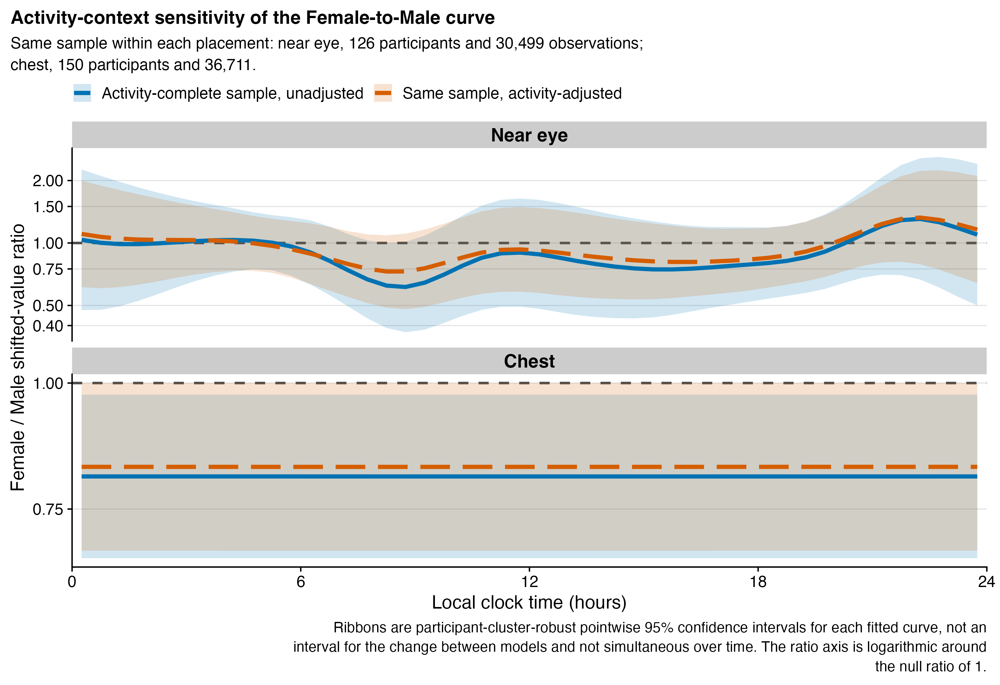
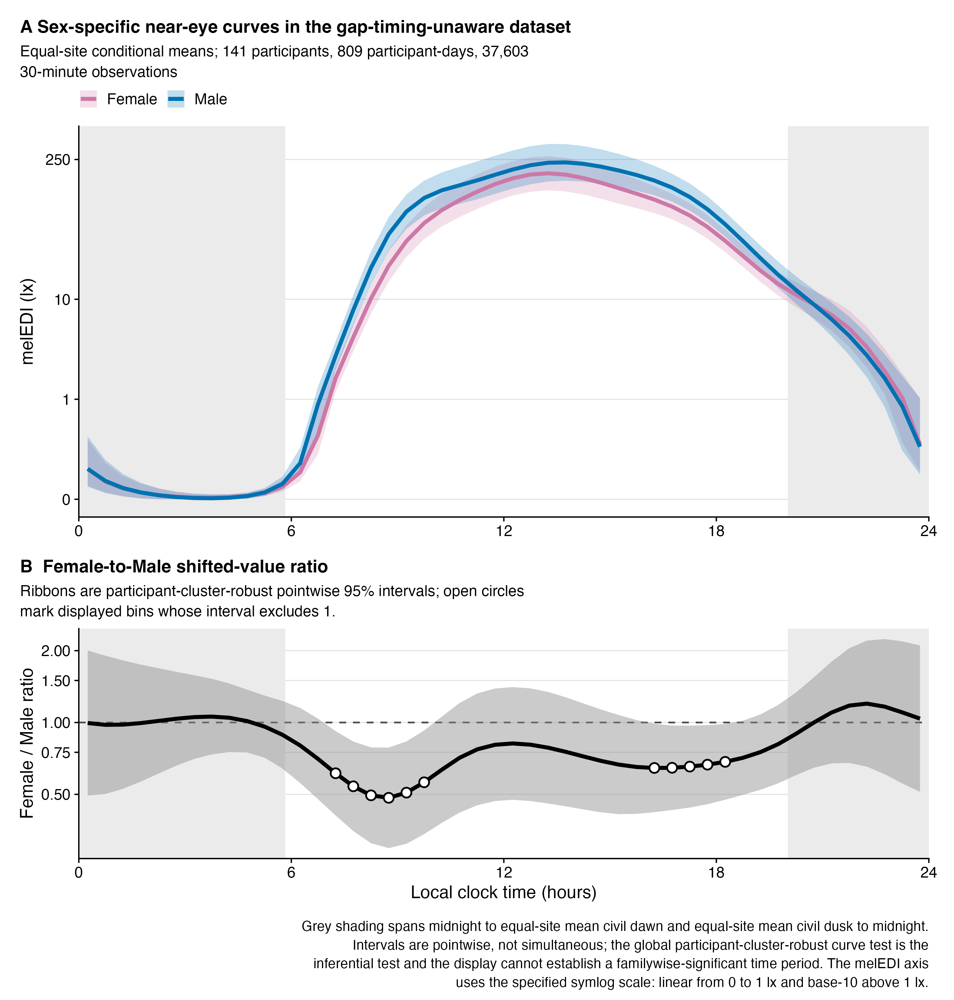
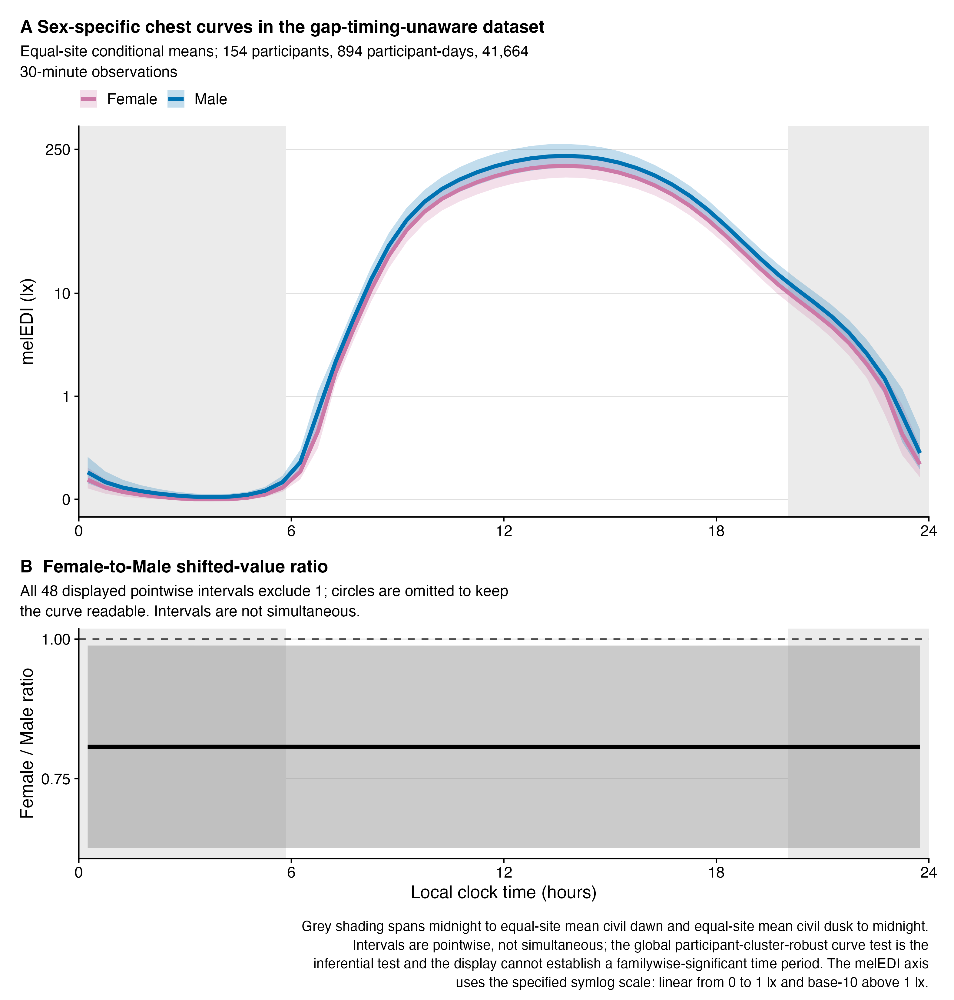
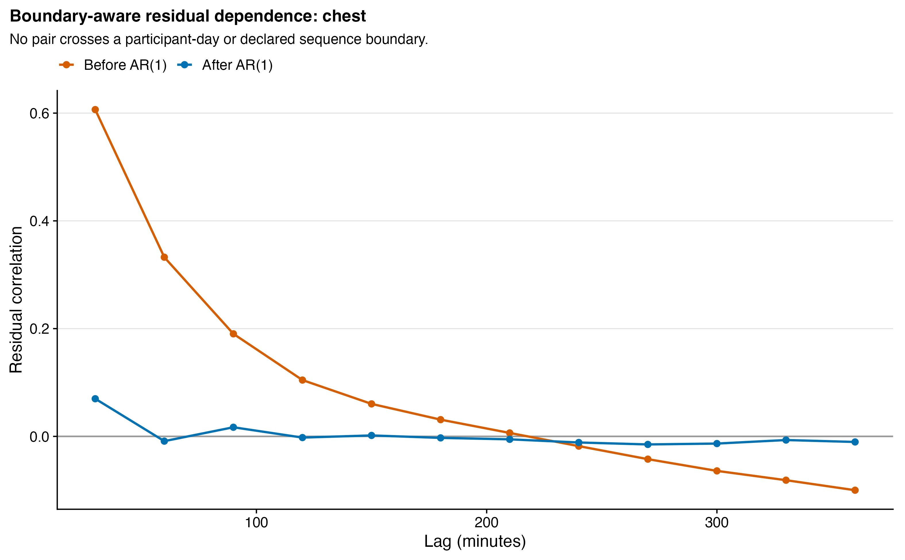

source("scripts/project.R")
analysis_setup()
source("scripts/pipeline/paths_io.R")
source("scripts/pipeline/p_value_display.R")
root <- normalizePath(Sys.getenv("QUARTO_PROJECT_DIR", unset = getwd()))
producer <- "analyses/H11-sex-daily-patterns.qmd"
options(stringsAsFactors = FALSE, scipen = 999, dplyr.summarise.inform = FALSE)
roots <- list(model_data = file.path(root,"results/intermediate/model_data/H11"), models = file.path(root,"results/models/H11"), diagnostics = file.path(root,"results/csv/diagnostics/H11"), tables = file.path(root,"results/tables/H11"), figures = file.path(root,"results/images/H11"), source_data = file.path(root,"results/csv/source_data/H11"))
invisible(lapply(roots, dir.create, recursive=TRUE, showWarnings=FALSE))
metadata <- list()
suppressPackageStartupMessages({library(dplyr);library(gratia);library(mgcv);library(readr);library(tibble);library(tidyr)})
source("scripts/hypotheses/H02/h02_contract.R")
source("scripts/hypotheses/H02/h02_modeling.R")
source("scripts/hypotheses/H02/h02_dominance.R")
source("scripts/hypotheses/H11/h11_data.R")
source("scripts/hypotheses/H11/h11_modeling.R")
source("scripts/hypotheses/H11/h11_activity_context.R")
paths <- h11_paths(root)
h11_create_directories(paths)
write_model_csv <- function(data, path) { readr::write_csv(data, path, na = ""); invisible(path) }H11: Biological sex and daily personal light-exposure patterns
Biological-sex-specific daily light patterns are estimated on the same temporal model structure used for the geographic daily-pattern analysis. Participant-cluster-robust tests assess the complete Female-minus-Male curve, and pointwise intervals describe its local uncertainty.
Data and model guide
This analysis inherits the H02 half-hour model frames and joins biological sex from the prepared participant information. The inherited coverage rules, exact-zero handling, log10(melEDI + 0.1) response and elapsed-time AR sequence boundaries are retained. Near-eye and chest measurements are fitted separately. Complete available-data samples and activity-complete samples answer different comparison questions.
The nonlinear model uses a cyclic Male reference curve and a cyclic Female-minus-Male shape deviation, together with a constant sex effect, sum-to-zero site deviations, participant curves and participant-day intercepts. AR(1) represents remaining short-lag dependence. Exact formulas, model settings and sample counts are displayed below. The activity-adjusted model uses Home as its reference and shares a smoothing parameter across the ordered activity deviations.
The complete-curve test jointly evaluates constant and time-varying sex contributions. It uses participant-cluster CR1 covariance from AR-whitened scores, the smoothing-bias correction and a finite-cluster fractional-rank F reference. Pointwise intervals apply to individual clock bins and are not simultaneous day-wide bands. Conditional effect sizes and their bootstrap uncertainty describe the fitted response structure. Alternative preprocessing and the sequence of sample restriction followed by activity adjustment assess stability. Attenuation after restriction and adjustment cannot by itself identify a behavioural mechanism.
The executable sections below write fitted objects to results/models/H11/, reader tables to results/tables/H11/, and the supporting numerical and figure outputs under results/. Start with the calculations below or jump to findings and interpretation.
Model structure and inputs
Use the regenerated half-hour H02 frames, measured biological-sex data and the inherited temporal formula. Near-eye and chest curves are fitted independently.
Fit sex-specific temporal curves
Fit preliminary curves to estimate within-sequence autocorrelation, then fit the final curves using the same sequence boundaries and run-specific correlation. Save exact samples and fitted model objects.
registry <- h11_registry(root)
active_registry <- registry
formulas <- h11_formula_set(root)
formula_plan <- tidyr::crossing(
registry |>
dplyr::select(
"run_id", "data_scenario_id", "placement", "analytical_role"
),
tibble::tribble(
~model_id, ~formula_id, ~method, ~discrete, ~rho_rule, ~fit_role,
"mpattern_preliminary_rho0_fREML", "proposed_mpattern", "fREML", TRUE,
"rho = 0", "preliminary boundary-aware rho estimation",
"mpattern_final_fREML", "proposed_mpattern", "fREML", TRUE,
"one run-specific rho from preliminary full model", "final estimation",
"robust_complete_curve_test", "proposed_mpattern", "post-fit robust Wald", NA,
"retained final-model rho and AR.start whitening", "global inference",
"robust_level_shape_tests", "proposed_mpattern", "post-fit robust Wald", NA,
"retained final-model rho and AR.start whitening", "BH-adjusted decomposition inference",
"m0_effect_size_fREML", "proposed_m0", "fREML", TRUE,
"one run-specific rho from preliminary full model",
"conditional effect-size baseline; fitted only when placement criterion opens"
)
) |>
dplyr::mutate(
formula = vapply(
.data$formula_id,
function(id) h11_formula_text(formulas[[id]]),
character(1)
),
family = "Gaussian",
link = "identity",
knots = "time_hour = c(0, 24)",
biological_sex_encoding = paste(
"sex treatment contrast with Male reference; sex_smooth ordered",
"Male then Female for cyclic Female-minus-Male deviation"
)
)
write_model_csv(
formula_plan,
file.path(paths$model_data, "formula_and_fit_settings.csv")
)
demographics <- readRDS(file.path(
root,
"results/intermediate/model_data/normalized_inputs/demographics.rds"
))
message("Beginning H11 analysis fits")
for (index in seq_len(nrow(active_registry))) {
run <- active_registry[index, , drop = FALSE]
message("H11 run: ", run$run_id)
frame <- readRDS(run$frame_path)
h11_fit_run(frame, demographics, run, formulas, paths)
rm(frame)
invisible(gc())
}
bundle_paths <- file.path(
paths$models,
registry$run_id,
"fit_bundle.rds"
)
bundles <- lapply(bundle_paths, readRDS)
names(bundles) <- registry$run_id
sample_counts <- dplyr::bind_rows(lapply(bundles, `[[`, "sample"))
model_fit_summary <- dplyr::bind_rows(lapply(bundles, `[[`, "model_rows"))
rho_summary <- dplyr::bind_rows(lapply(bundles, `[[`, "rho_row"))
write_model_csv(sample_counts, file.path(paths$tables, "sample_counts.csv"))
write_model_csv(
model_fit_summary,
file.path(paths$tables, "model_fit_summary.csv")
)
write_model_csv(rho_summary, file.path(paths$tables, "rho_summary.csv"))Sensor-position samples
Describe whether a position-matched visual comparison is supported by the underlying samples. The numerical models continue to have position-specific scopes.
h02_sample_counts <- utils::read.csv(
file.path(root, "results/intermediate/model_data/H02/sample_counts.csv"),
stringsAsFactors = FALSE,
check.names = FALSE
)
paired_run_ids <- c(
"main__glasses__paired_common_sample",
"main__chest__paired_common_sample"
)
paired_counts <- h02_sample_counts |>
dplyr::filter(
.data$run_id %in% paired_run_ids,
.data$site == "ALL_SITES"
) |>
dplyr::arrange(match(.data$run_id, paired_run_ids))
paired_frame_paths <- file.path(
root,
"results/intermediate/model_data/H02",
paste0(paired_run_ids, ".rds")
)
paired_display_assessment <- tibble::tibble(
all_available_near_eye_participants = sample_counts$participants[
sample_counts$run_id == "main__glasses__all_available"
],
all_available_chest_participants = sample_counts$participants[
sample_counts$run_id == "main__chest__all_available"
],
all_available_near_eye_participant_days = sample_counts$participant_days[
sample_counts$run_id == "main__glasses__all_available"
],
all_available_chest_participant_days = sample_counts$participant_days[
sample_counts$run_id == "main__chest__all_available"
],
all_available_near_eye_observations = sample_counts$observations_30_minute[
sample_counts$run_id == "main__glasses__all_available"
],
all_available_chest_observations = sample_counts$observations_30_minute[
sample_counts$run_id == "main__chest__all_available"
],
all_available_near_eye_sites = sample_counts$sites[
sample_counts$run_id == "main__glasses__all_available"
],
all_available_chest_sites = sample_counts$sites[
sample_counts$run_id == "main__chest__all_available"
],
stored_paired_frame_participants = paired_counts$participants[[1L]],
stored_paired_frame_participant_days = paired_counts$participant_days[[1L]],
stored_paired_frame_observations = paired_counts$observations_30_minute[[1L]],
stored_paired_frame_sites = paired_counts$sites[[1L]],
stored_h02_paired_frames_available = all(file.exists(paired_frame_paths)),
h11_paired_fitted_outputs_available = any(grepl(
"paired_common_sample",
model_fit_summary$run_id,
fixed = TRUE
)),
predeclared_scalar_temporal_estimand_available = FALSE,
scalar_identity_plot_applicable = FALSE,
applicability_reason = paste(
"The fitted H11 analysis outputs use unmatched all-available samples,",
"and the registered paired/common H11 sensitivity has not been fitted.",
"The H11 result is a temporal curve without a predeclared scalar",
"reduction, so an H05-style scalar identity scatter would be misleading."
),
closest_valid_display = paste(
"Retain separate primary near-eye and complementary chest curves in",
"analysis without direct paired interpretation. A paired/common",
"sensitivity would require matched placement curves",
"or Female-minus-Male contrast curves; reconsider a clock-bin identity",
"display only after exact estimand comparability is verified."
),
paired_source_data_csv = NA_character_,
source_data_status = paste(
"Not created because no valid H11 paired fitted estimands exist at",
"the analysed samples; unmatched outputs are not paired."
)
)
write_model_csv(
paired_display_assessment,
file.path(paths$model_data, "paired_placement_display_assessment.csv")
)Robust tests, intervals and model diagnostics
Compute participant-cluster CR1 covariance with the smooth-uncertainty correction, global and level/shape tests, pointwise curves, residual checks and site-constraint diagnostics.
curve_tables <- list()
contrast_tables <- list()
contrast_contracts <- list()
closure_tables <- list()
parametric_tables <- list()
acf_tables <- list()
residual_tables <- list()
smooth_tables <- list()
concurvity_tables <- list()
k_check_tables <- list()
site_constraint_tables <- list()
assessment_tables <- list()
comparison_tables <- list()
robust_diagnostic_tables <- list()
message("Calculating final-model contrasts and diagnostics")
for (index in seq_len(nrow(registry))) {
run <- registry[index, , drop = FALSE]
bundle <- bundles[[run$run_id]]
data <- readRDS(bundle$frame_path)
preliminary <- readRDS(bundle$model_paths$preliminary)
final <- readRDS(bundle$model_paths$final)
message(" curves and diagnostics: ", run$run_id)
robust_context <- h11_robust_context(
final,
data,
run$run_id
)
robust_test <- h11_robust_tests(
final,
data,
run,
robust_context
)
comparison_tables[[run$run_id]] <- robust_test$comparisons
robust_diagnostic_tables[[run$run_id]] <- robust_test$diagnostics
curve_contract <- h11_pointwise_curves(
final,
data,
run$run_id,
robust_context
)
curve_tables[[run$run_id]] <- curve_contract$curves
contrast_tables[[run$run_id]] <- curve_contract$contrast
contrast_contracts[[run$run_id]] <- curve_contract
closure_tables[[run$run_id]] <- h11_curve_closure(
final, data, run$run_id
)
parametric_tables[[run$run_id]] <- h11_parametric_sex(
final, run$run_id, robust_context
)
acf_tables[[run$run_id]] <- dplyr::bind_rows(
h11_residual_acf(
preliminary, data, run$run_id, "preliminary_rho0_response"
),
h11_residual_acf(
final, data, run$run_id, "final_AR1_standardized"
)
)
residual_tables[[run$run_id]] <- h11_residual_summary(
final, data, run$run_id
)
smooth_tables[[run$run_id]] <- h11_smooth_summary(
final, run$run_id
)
concurvity_tables[[run$run_id]] <- h11_concurvity(
final, run$run_id
)
k_check_tables[[run$run_id]] <- h11_k_check(
final,
run$run_id,
seed = h02_seed(run$run_id, 90L)
)
site_constraint_tables[[run$run_id]] <- h11_site_constraint(
final, data, run$run_id
)
assessment_tables[[run$run_id]] <- h11_diagnostic_assessment(
bundle$model_rows,
acf_tables[[run$run_id]],
closure_tables[[run$run_id]],
site_constraint_tables[[run$run_id]],
k_check_tables[[run$run_id]],
run$run_id
)
rm(data, preliminary, final, robust_context, robust_test)
invisible(gc())
}
sex_curves <- dplyr::bind_rows(curve_tables)
sex_contrasts <- dplyr::bind_rows(contrast_tables)
pointwise_segments <- h11_pointwise_segments(sex_contrasts)
curve_closure <- dplyr::bind_rows(closure_tables)
parametric_sex <- dplyr::bind_rows(parametric_tables)
residual_acf <- dplyr::bind_rows(acf_tables)
residual_summary <- dplyr::bind_rows(residual_tables)
smooth_summary <- dplyr::bind_rows(smooth_tables)
formal_concurvity <- dplyr::bind_rows(concurvity_tables)
k_check <- dplyr::bind_rows(k_check_tables)
site_constraint <- dplyr::bind_rows(site_constraint_tables)
diagnostic_assessment <- dplyr::bind_rows(assessment_tables)
model_comparisons <- h11_adjust_multiplicity(
dplyr::bind_rows(comparison_tables)
)
robust_inference_diagnostics <- dplyr::bind_rows(robust_diagnostic_tables)
write_model_csv(
model_comparisons,
file.path(paths$tables, "model_comparisons.csv")
)
write_model_csv(
robust_inference_diagnostics,
file.path(paths$diagnostics, "robust_inference_diagnostics.csv")
)
write_model_csv(
sex_curves,
file.path(paths$source_data, "sex_specific_curves_pointwise.csv")
)
write_model_csv(
sex_contrasts,
file.path(paths$source_data, "female_minus_male_pointwise_contrasts.csv")
)
write_model_csv(
pointwise_segments,
file.path(paths$tables, "pointwise_descriptive_segments.csv")
)
write_model_csv(
curve_closure,
file.path(paths$diagnostics, "cyclic_curve_closure.csv")
)
write_model_csv(
parametric_sex,
file.path(paths$tables, "parametric_sex_component.csv")
)
write_model_csv(
residual_acf,
file.path(paths$diagnostics, "boundary_aware_residual_acf.csv")
)
write_model_csv(
residual_summary,
file.path(paths$diagnostics, "residual_summary.csv")
)
write_model_csv(
smooth_summary,
file.path(paths$diagnostics, "smooth_summary.csv")
)
write_model_csv(
formal_concurvity,
file.path(paths$diagnostics, "formal_concurvity.csv")
)
write_model_csv(
k_check,
file.path(paths$diagnostics, "basis_dimension_check.csv")
)
write_model_csv(
site_constraint,
file.path(paths$diagnostics, "site_sum_to_zero_constraint.csv")
)
write_model_csv(
diagnostic_assessment,
file.path(paths$diagnostics, "diagnostic_assessment.csv")
)Conditional effect sizes
When the raw global test is below 0.05, describe additional in-sample variation beyond the temporal baseline. Hierarchical resampling uses 50 replicates by default and supports descriptive uncertainty rather than a separate confirmatory test.
main_global <- model_comparisons |>
dplyr::filter(
.data$data_scenario_id == "main",
.data$comparison_role == "global"
)
effect_condition <- main_global |>
dplyr::transmute(
run_id = .data$run_id,
placement = .data$placement,
family_id = .data$family_id,
p_raw = .data$p_raw,
p_adjusted_BH = .data$p_adjusted_BH,
support_status = .data$support_status,
effect_size_condition_open = .data$p_raw < 0.05,
criterion_rule = paste(
"Open within this main placement only when the retained one-test",
"global participant-cluster-robust raw p < 0.050; chest cannot alter",
"the primary near-eye criterion."
)
)
write_model_csv(
effect_condition,
file.path(paths$tables, "effect_size_condition.csv")
)
effect_model_rows <- list()
effect_bootstrap_tables <- list()
effect_variation_tables <- list()
effect_prediction_metadata <- list()
for (index in which(effect_condition$effect_size_condition_open)) {
criterion <- effect_condition[index, , drop = FALSE]
run <- registry[match(criterion$run_id, registry$run_id), , drop = FALSE]
bundle <- bundles[[run$run_id]]
data <- readRDS(bundle$frame_path)
final <- readRDS(bundle$model_paths$final)
effect_robust_context <- h11_robust_context(
final,
data,
run$run_id
)
baseline <- h11_fit_and_save(
formulas$proposed_m0,
data,
"fREML",
bundle$rho,
TRUE,
"m0_effect_size_fREML",
run$run_id,
paths$models
)
effect_model_rows[[run$run_id]] <- h11_model_row(
baseline,
run,
"proposed_m0"
) |>
dplyr::mutate(
fit_role = "conditional H02-like effect-size baseline",
inferential_role = "descriptive fitted-model relevance only"
)
baseline_prediction <- as.numeric(stats::fitted(baseline$fit))
full_prediction <- as.numeric(stats::fitted(final))
predictions <- tibble::tibble(
run_id = run$run_id,
row_index = seq_len(nrow(data)),
response = data$response,
baseline_prediction = baseline_prediction,
full_prediction = full_prediction
)
prediction_path <- file.path(
paths$source_data,
paste0(run$run_id, "__effect_size_fixed_predictions.rds")
)
saveRDS(predictions, prediction_path, compress = "xz")
resampling <- h11_bootstrap_r2(
response = data$response,
baseline_prediction = baseline_prediction,
full_prediction = full_prediction,
data = data,
replicates = bootstrap_count(50L),
seed = h02_seed(run$run_id, 110L)
)
bootstrap_path <- file.path(
paths$diagnostics,
paste0(run$run_id, "__effect_size_bootstrap.rds")
)
saveRDS(resampling, bootstrap_path, compress = "xz")
effect_bootstrap_tables[[run$run_id]] <- h11_effect_bootstrap_summary(
resampling,
run$run_id
) |>
dplyr::mutate(
placement = run$placement,
participants = dplyr::n_distinct(data$participant),
participant_days = dplyr::n_distinct(data$participant_day),
observations_30_minute = nrow(data),
sites = dplyr::n_distinct(data$site),
.after = "run_id"
)
effect_variation_tables[[run$run_id]] <- h11_curve_variation(
final,
contrast_contracts[[run$run_id]],
run$run_id,
effect_robust_context
) |>
dplyr::mutate(
placement = run$placement,
participants = dplyr::n_distinct(data$participant),
participant_days = dplyr::n_distinct(data$participant_day),
observations_30_minute = nrow(data),
sites = dplyr::n_distinct(data$site),
.after = "run_id"
)
effect_prediction_metadata[[run$run_id]] <- tibble::tibble(
run_id = run$run_id,
placement = run$placement,
prediction_path = sub(paste0("^", root, "/"), "", prediction_path),
bootstrap_path = sub(paste0("^", root, "/"), "", bootstrap_path),
baseline_formula = h11_formula_text(formulas$proposed_m0),
full_formula = h11_formula_text(formulas$proposed_mpattern),
rho = bundle$rho,
effect_size_scope = paste(
"Exact one-block conditional Shapley/general-dominance allocation",
"beyond the inherited H02 temporal baseline; row-weighted in-sample",
"R-squared on log10(melEDI + 0.1 lx); fixed predictions."
)
)
rm(
data,
final,
baseline,
resampling,
predictions,
effect_robust_context
)
invisible(gc())
}
effect_model_summary <- dplyr::bind_rows(effect_model_rows)
effect_size_bootstrap <- dplyr::bind_rows(effect_bootstrap_tables)
effect_curve_variation <- dplyr::bind_rows(effect_variation_tables)
effect_prediction_export_index <- dplyr::bind_rows(effect_prediction_metadata)
write_model_csv(
effect_model_summary,
file.path(paths$tables, "effect_size_model_fit_summary.csv")
)
write_model_csv(
effect_size_bootstrap,
file.path(paths$tables, "effect_size_bootstrap.csv")
)
write_model_csv(
effect_curve_variation,
file.path(paths$tables, "effect_size_curve_variation.csv")
)Alternative preprocessing
Compare complete-curve tests between primary preprocessing and the gap-timing-unaware dataset. These are sensitivity results with their own samples.
new_global <- model_comparisons |>
dplyr::filter(.data$comparison_role == "global") |>
dplyr::select(
"run_id", "data_scenario_id", "placement", "analytical_role",
"test_statistic", "test_df", "denominator_df",
"reduced_AIC", "full_AIC", "delta_AIC_reduced_minus_full",
"p_raw", "p_adjusted_BH", "support_status"
) |>
dplyr::left_join(
sample_counts |>
dplyr::select(
"run_id", "participants", "participant_days",
"observations_30_minute", "sites"
),
by = "run_id",
relationship = "one-to-one"
)
data_preparation_comparison <- new_global |>
dplyr::select(
"placement", "data_scenario_id", "test_statistic", "test_df",
"denominator_df",
"p_raw", "p_adjusted_BH", "support_status",
"participants", "participant_days", "observations_30_minute", "sites"
) |>
tidyr::pivot_wider(
names_from = "data_scenario_id",
values_from = c(
"test_statistic", "test_df", "denominator_df", "p_raw", "p_adjusted_BH",
"support_status", "participants", "participant_days",
"observations_30_minute", "sites"
),
names_sep = "__"
) |>
dplyr::mutate(
added_participant_days_main_minus_alternative =
.data$participant_days__main -
.data$participant_days__alternative_preprocessing,
added_observations_main_minus_alternative =
.data$observations_30_minute__main -
.data$observations_30_minute__alternative_preprocessing,
robust_statistic_change_main_minus_gap_timing_unaware =
.data$test_statistic__main -
.data$test_statistic__alternative_preprocessing,
raw_p_change_main_minus_gap_timing_unaware =
.data$p_raw__main -
.data$p_raw__alternative_preprocessing,
interpretation_scope = paste(
"This contrast holds the specified H11 implementation fixed and varies",
"the shared preparation scenario; it does not isolate one individual",
"upstream correction."
)
)
write_model_csv(
data_preparation_comparison,
file.path(paths$tables, "data_preparation_comparison.csv")
)Restrict and adjust for immediate setting
Construct the exact diary-complete sample, then fit unadjusted and activity-adjusted curves on that same sample. Each multiselect hour uses its defined diary representation; restriction and adjustment are examined separately.
paths <- h11_activity_paths(root)
h11_activity_create_directories(paths)
write_activity_csv <- function(data, path) {
readr::write_csv(data, path, na = "")
invisible(path)
}
relative_path <- function(path) {
sub(paste0("^", root, "/"), "", normalizePath(
path,
winslash = "/",
mustWork = TRUE
))
}
registry <- tibble::tribble(
~run_id, ~placement, ~analytical_role, ~primary_frame_relative_path,
"activity_context__glasses", "glasses", "primary near-eye sensitivity",
"results/intermediate/model_data/H11/fitted/main__glasses__all_available__frame.rds",
"activity_context__chest", "chest", "complementary chest sensitivity",
"results/intermediate/model_data/H11/fitted/main__chest__all_available__frame.rds"
) |>
dplyr::mutate(
primary_frame_path = file.path(root, .data$primary_frame_relative_path)
)
diary_path <- file.path(
root,
"results/intermediate/model_data/normalized_inputs/lightexposurediary.rds"
)
diary <- h11_activity_prepare_diary(readRDS(diary_path))
write_activity_csv(
diary$diagnostic,
file.path(paths$model_data, "normalized_diary_activity_diagnostic.csv")
)
prepared <- list()
sample_rows <- list()
support_rows <- list()
join_rows <- list()
boundary_rows <- list()
for (index in seq_len(nrow(registry))) {
run <- registry[index, , drop = FALSE]
primary_frame <- readRDS(run$primary_frame_path)
attached <- h11_activity_attach(
primary_frame,
diary$data,
run$run_id
)
data <- attached$data
frame_path <- file.path(paths$model_data, paste0(run$run_id, "__frame.rds"))
saveRDS(data, frame_path, compress = "xz")
prepared[[run$run_id]] <- list(data = data, frame_path = frame_path)
sample_rows[[run$run_id]] <- h11_activity_sample_row(
data,
run$run_id,
run$placement
)
support_rows[[run$run_id]] <- h11_activity_support(
data,
run$run_id,
run$placement
)
join_rows[[run$run_id]] <- attached$join_diagnostic |>
dplyr::mutate(placement = run$placement, .after = "run_id")
boundary_rows[[run$run_id]] <- data |>
dplyr::count(.data$activity_AR_start_reason, name = "observations_30_minute") |>
dplyr::mutate(
run_id = run$run_id,
placement = run$placement,
AR_start = .data$activity_AR_start_reason != "continuous",
.before = 1L
)
rm(primary_frame, attached)
}
sample_counts <- dplyr::bind_rows(sample_rows)
activity_support <- dplyr::bind_rows(support_rows)
join_diagnostic <- dplyr::bind_rows(join_rows)
boundary_diagnostic <- dplyr::bind_rows(boundary_rows)
write_activity_csv(
sample_counts,
file.path(paths$tables, "activity_common_sample_counts.csv")
)
write_activity_csv(
activity_support,
file.path(paths$tables, "activity_category_support_by_sex.csv")
)
write_activity_csv(
join_diagnostic,
file.path(paths$model_data, "activity_join_attrition.csv")
)
write_activity_csv(
boundary_diagnostic,
file.path(paths$model_data, "activity_AR_boundary_diagnostic.csv")
)
formulas <- h11_activity_formulas(root)
formula_settings <- tibble::tribble(
~formula_id, ~fit_role, ~rho_rule, ~fit_criterion,
"restricted_unadjusted", "same-sample unadjusted H11 sensitivity",
"rho from preliminary activity-adjusted model", "always",
"activity_adjusted", "same-sample activity-adjusted H11 sensitivity",
"rho from preliminary activity-adjusted model", "always",
"activity_adjusted_no_sex", "conditional effect-size baseline",
"same final rho", "only if adjusted global raw p < 0.050"
) |>
dplyr::mutate(
formula = vapply(
.data$formula_id,
function(id) h11_formula_text(formulas[[id]]),
character(1)
),
family = "Gaussian",
link = "identity",
method = "fREML",
discrete = TRUE,
knots = "time_hour = c(0, 24)",
activity_encoding = paste(
"Treatment-coded activity level with home reference; ordered-factor",
"cyclic deviations with common smoothing parameter id = 2"
),
interval_method = "participant-cluster-robust pointwise 95% intervals"
)
write_activity_csv(
formula_settings,
file.path(paths$model_data, "formula_and_fit_settings.csv")
)
active_registry <- registry
message("Beginning discrete=TRUE activity-context fits")
for (index in seq_len(nrow(active_registry))) {
run <- active_registry[index, , drop = FALSE]
data <- prepared[[run$run_id]]$data
preliminary <- h11_activity_fit_and_save(
formula = formulas$activity_adjusted,
data = data,
method = "fREML",
rho = 0,
model_id = "activity_adjusted_preliminary_rho0_fREML",
run_id = run$run_id,
model_directory = paths$models
)
rho <- h02_estimate_rho(preliminary$fit, data)
if (!is.finite(rho) || abs(rho) > 0.95) {
h11_activity_abort("Invalid boundary-aware rho for %s", run$run_id)
}
unadjusted <- h11_activity_fit_and_save(
formula = formulas$restricted_unadjusted,
data = data,
method = "fREML",
rho = rho,
model_id = "restricted_unadjusted_final_fREML",
run_id = run$run_id,
model_directory = paths$models
)
adjusted <- h11_activity_fit_and_save(
formula = formulas$activity_adjusted,
data = data,
method = "fREML",
rho = rho,
model_id = "activity_adjusted_final_fREML",
run_id = run$run_id,
model_directory = paths$models
)
bundle <- list(
run_id = run$run_id,
placement = run$placement,
analytical_role = run$analytical_role,
frame_path = prepared[[run$run_id]]$frame_path,
rho = rho,
preliminary_path = preliminary$model_path,
unadjusted_path = unadjusted$model_path,
adjusted_path = adjusted$model_path,
preliminary_metadata_path = preliminary$metadata_path,
unadjusted_metadata_path = unadjusted$metadata_path,
adjusted_metadata_path = adjusted$metadata_path,
completed_at = format(Sys.time(), tz = "Europe/Berlin", usetz = TRUE)
)
saveRDS(
bundle,
file.path(paths$models, run$run_id, "activity_context_run_bundle.rds"),
compress = "xz"
)
rm(data, preliminary, unadjusted, adjusted, bundle)
invisible(gc())
}
bundle_paths <- file.path(
paths$models,
registry$run_id,
"activity_context_run_bundle.rds"
)Activity-adjusted comparisons
Compute robust tests and contrast attenuation on the activity-complete samples. These associational comparisons do not identify causal mediation.
bundles <- lapply(bundle_paths, readRDS)
names(bundles) <- registry$run_id
model_rows <- list()
rho_rows <- list()
comparison_rows <- list()
robust_rows <- list()
curve_rows <- list()
contrast_rows <- list()
acf_rows <- list()
residual_rows <- list()
smooth_rows <- list()
concurvity_rows <- list()
k_rows <- list()
closure_rows <- list()
site_rows <- list()
assessment_rows <- list()
effect_variation_rows <- list()
message("Computing robust tests, pointwise intervals, and diagnostics")
for (index in seq_len(nrow(registry))) {
run <- registry[index, , drop = FALSE]
bundle <- bundles[[run$run_id]]
data <- readRDS(bundle$frame_path)
fit_results <- list(
restricted_unadjusted = list(
fit = readRDS(bundle$unadjusted_path),
metadata = readRDS(bundle$unadjusted_metadata_path)
),
activity_adjusted = list(
fit = readRDS(bundle$adjusted_path),
metadata = readRDS(bundle$adjusted_metadata_path)
)
)
preliminary <- readRDS(bundle$preliminary_path)
rho_rows[[run$run_id]] <- tibble::tibble(
run_id = run$run_id,
placement = run$placement,
rho = bundle$rho,
rho_source_model = "activity_adjusted_preliminary_rho0_fREML",
rho_estimator = paste(
"Boundary-aware lag-1 correlation of preliminary response residuals;",
"held fixed across both exact-common-sample final fits"
),
preliminary_lag1_response_correlation = unname(
h02_boundary_lag_correlation(
stats::residuals(preliminary, type = "response"),
data$AR_start,
lag = 1L
)["correlation"]
),
AR_sequences = sum(data$AR_start)
)
for (model_variant in names(fit_results)) {
result <- fit_results[[model_variant]]
fit <- result$fit
diagnostic_run_id <- paste(run$run_id, model_variant, sep = "__")
row <- h11_activity_model_row(
result,
run$run_id,
run$placement,
model_variant
)
model_rows[[diagnostic_run_id]] <- row
context <- h11_robust_context(fit, data, diagnostic_run_id)
robust <- h11_activity_robust_test(
fit,
data,
run$run_id,
run$placement,
model_variant,
context
)
comparison_rows[[diagnostic_run_id]] <- robust$comparison
robust_rows[[diagnostic_run_id]] <- robust$diagnostics
pointwise <- h11_activity_pointwise_curves(
fit,
data,
run$run_id,
run$placement,
model_variant,
context
)
curve_rows[[diagnostic_run_id]] <- pointwise$curves
contrast_rows[[diagnostic_run_id]] <- pointwise$contrast
closure <- h11_activity_curve_closure(
fit,
data,
run$run_id,
run$placement,
model_variant
)
closure_rows[[diagnostic_run_id]] <- closure
acf <- h11_residual_acf(
fit,
data,
diagnostic_run_id,
"final_AR1_standardized"
) |>
dplyr::mutate(
base_run_id = run$run_id,
placement = run$placement,
model_variant = model_variant,
.after = "run_id"
)
acf_rows[[diagnostic_run_id]] <- acf
residual_rows[[diagnostic_run_id]] <- h11_residual_summary(
fit,
data,
diagnostic_run_id
) |>
dplyr::mutate(
base_run_id = run$run_id,
placement = run$placement,
model_variant = model_variant,
.after = "run_id"
)
smooth_rows[[diagnostic_run_id]] <- h11_smooth_summary(
fit,
diagnostic_run_id
) |>
dplyr::mutate(
base_run_id = run$run_id,
placement = run$placement,
model_variant = model_variant,
.after = "run_id"
)
concurvity_rows[[diagnostic_run_id]] <- h11_concurvity(
fit,
diagnostic_run_id
) |>
dplyr::mutate(
base_run_id = run$run_id,
placement = run$placement,
model_variant = model_variant,
.after = "run_id"
)
k_check <- h11_k_check(
fit,
diagnostic_run_id,
seed = h02_seed(diagnostic_run_id, 130L)
) |>
dplyr::mutate(
base_run_id = run$run_id,
placement = run$placement,
model_variant = model_variant,
.after = "run_id"
)
k_rows[[diagnostic_run_id]] <- k_check
site_constraint <- h11_activity_site_constraint(
fit,
data,
run$run_id,
run$placement,
model_variant
)
site_rows[[diagnostic_run_id]] <- site_constraint
assessment_rows[[diagnostic_run_id]] <-
h11_activity_diagnostic_assessment(
row,
acf,
closure,
site_constraint,
k_check,
run$run_id,
run$placement,
model_variant
)
if (
model_variant == "activity_adjusted" &&
robust$comparison$p_raw < 0.05
) {
effect_variation_rows[[run$run_id]] <-
h11_curve_variation(
fit,
pointwise,
diagnostic_run_id,
context
) |>
dplyr::mutate(
base_run_id = run$run_id,
placement = run$placement,
model_variant = model_variant,
participants = dplyr::n_distinct(data$participant),
participant_days = dplyr::n_distinct(data$participant_day),
observations_30_minute = nrow(data),
sites = dplyr::n_distinct(data$site),
.after = "run_id"
)
}
rm(
fit,
context,
robust,
pointwise,
closure,
acf,
k_check,
site_constraint
)
invisible(gc())
}
rm(data, fit_results, preliminary)
invisible(gc())
}
model_fit_summary <- dplyr::bind_rows(model_rows)
rho_summary <- dplyr::bind_rows(rho_rows)
comparisons <- dplyr::bind_rows(comparison_rows)
robust_diagnostics <- dplyr::bind_rows(robust_rows)
curves <- dplyr::bind_rows(curve_rows)
contrasts <- dplyr::bind_rows(contrast_rows)
residual_acf <- dplyr::bind_rows(acf_rows)
residual_summary <- dplyr::bind_rows(residual_rows)
smooth_summary <- dplyr::bind_rows(smooth_rows)
formal_concurvity <- dplyr::bind_rows(concurvity_rows)
k_check <- dplyr::bind_rows(k_rows)
curve_closure <- dplyr::bind_rows(closure_rows)
site_constraint <- dplyr::bind_rows(site_rows)
diagnostic_assessment <- dplyr::bind_rows(assessment_rows)
effect_curve_variation <- dplyr::bind_rows(effect_variation_rows)
attenuation <- h11_activity_attenuation(comparisons, contrasts)
write_activity_csv(
model_fit_summary,
file.path(paths$tables, "model_fit_summary.csv")
)
write_activity_csv(rho_summary, file.path(paths$tables, "rho_summary.csv"))
write_activity_csv(
comparisons,
file.path(paths$tables, "global_sex_curve_tests.csv")
)
write_activity_csv(
attenuation,
file.path(paths$tables, "same_sample_activity_attenuation.csv")
)
write_activity_csv(
curves,
file.path(paths$source_data, "sex_specific_curves_pointwise.csv")
)
write_activity_csv(
contrasts,
file.path(paths$source_data, "female_minus_male_pointwise_contrasts.csv")
)
write_activity_csv(
robust_diagnostics,
file.path(paths$diagnostics, "robust_inference_diagnostics.csv")
)
write_activity_csv(
residual_acf,
file.path(paths$diagnostics, "boundary_aware_residual_acf.csv")
)
write_activity_csv(
residual_summary,
file.path(paths$diagnostics, "residual_summary.csv")
)
write_activity_csv(
smooth_summary,
file.path(paths$diagnostics, "smooth_summary.csv")
)
write_activity_csv(
formal_concurvity,
file.path(paths$diagnostics, "formal_concurvity.csv")
)
write_activity_csv(
k_check,
file.path(paths$diagnostics, "basis_dimension_check.csv")
)
write_activity_csv(
curve_closure,
file.path(paths$diagnostics, "cyclic_curve_closure.csv")
)
write_activity_csv(
site_constraint,
file.path(paths$diagnostics, "site_sum_to_zero_constraint.csv")
)
write_activity_csv(
diagnostic_assessment,
file.path(paths$diagnostics, "diagnostic_assessment.csv")
)
message("Applying the specified conditional sex effect-size criterion")
effect_condition <- comparisons |>
dplyr::filter(.data$model_variant == "activity_adjusted") |>
dplyr::transmute(
run_id = .data$run_id,
placement = .data$placement,
p_raw = .data$p_raw,
p_adjusted_BH = .data$p_adjusted_BH,
effect_size_condition_open = .data$p_raw < 0.05,
criterion_rule = paste(
"Open only when the activity-adjusted exploratory global robust raw",
"p-value is below 0.050 within that placement"
)
)
write_activity_csv(
effect_condition,
file.path(paths$tables, "activity_adjusted_effect_size_condition.csv")
)
effect_model_rows <- list()
effect_bootstrap_rows <- list()
effect_prediction_rows <- list()
for (index in which(effect_condition$effect_size_condition_open)) {
criterion <- effect_condition[index, , drop = FALSE]
run <- registry[match(criterion$run_id, registry$run_id), , drop = FALSE]
bundle <- bundles[[run$run_id]]
data <- readRDS(bundle$frame_path)
adjusted <- readRDS(bundle$adjusted_path)
baseline <- h11_activity_fit_and_save(
formula = formulas$activity_adjusted_no_sex,
data = data,
method = "fREML",
rho = bundle$rho,
model_id = "activity_adjusted_no_sex_effect_size_fREML",
run_id = run$run_id,
model_directory = paths$models
)
effect_model_rows[[run$run_id]] <- h11_activity_model_row(
baseline,
run$run_id,
run$placement,
"activity_adjusted_no_sex_effect_size_baseline"
) |>
dplyr::mutate(
inferential_role = "conditional descriptive effect-size baseline"
)
predictions <- tibble::tibble(
run_id = run$run_id,
row_index = seq_len(nrow(data)),
response = data$response,
baseline_prediction = as.numeric(stats::fitted(baseline$fit)),
full_prediction = as.numeric(stats::fitted(adjusted))
)
prediction_path <- file.path(
paths$source_data,
paste0(run$run_id, "__activity_adjusted_effect_size_predictions.rds")
)
saveRDS(predictions, prediction_path, compress = "xz")
resampling <- h11_bootstrap_r2(
response = predictions$response,
baseline_prediction = predictions$baseline_prediction,
full_prediction = predictions$full_prediction,
data = data,
replicates = bootstrap_count(50L),
seed = h02_seed(paste0(run$run_id, "__activity_adjusted"), 140L)
)
bootstrap_path <- file.path(
paths$diagnostics,
paste0(run$run_id, "__activity_adjusted_effect_size_bootstrap.rds")
)
saveRDS(resampling, bootstrap_path, compress = "xz")
effect_bootstrap_rows[[run$run_id]] <- h11_effect_bootstrap_summary(
resampling,
run$run_id
) |>
dplyr::mutate(
placement = run$placement,
participants = dplyr::n_distinct(data$participant),
participant_days = dplyr::n_distinct(data$participant_day),
observations_30_minute = nrow(data),
sites = dplyr::n_distinct(data$site),
.after = "run_id"
)
effect_prediction_rows[[run$run_id]] <- tibble::tibble(
run_id = run$run_id,
placement = run$placement,
prediction_relative_path = relative_path(prediction_path),
bootstrap_relative_path = relative_path(bootstrap_path),
baseline_formula = h11_formula_text(formulas$activity_adjusted_no_sex),
full_formula = h11_formula_text(formulas$activity_adjusted),
rho = bundle$rho,
effect_size_scope = paste(
"Sex-block increment beyond the activity-adjusted inherited temporal",
"baseline on the exact common sample; fixed in-sample predictions"
)
)
rm(data, adjusted, baseline, predictions, resampling)
invisible(gc())
}
effect_model_summary <- dplyr::bind_rows(effect_model_rows)
effect_size_bootstrap <- dplyr::bind_rows(effect_bootstrap_rows)
effect_prediction_export_index <- dplyr::bind_rows(effect_prediction_rows)
write_activity_csv(
effect_model_summary,
file.path(paths$tables, "activity_adjusted_effect_size_model_fit_summary.csv")
)
write_activity_csv(
effect_size_bootstrap,
file.path(paths$tables, "activity_adjusted_effect_size_bootstrap.csv")
)
write_activity_csv(
effect_curve_variation,
file.path(paths$tables, "activity_adjusted_effect_size_curve_variation.csv")
)
write_activity_csv(
effect_prediction_export_index,
file.path(paths$model_data, "activity_adjusted_effect_size_prediction_export_index.csv")
)Prepare daylight context
Generate equally site-weighted daylight context for the fitted participant-days. Daylight shading is descriptive and is not a fitted covariate.
source("scripts/hypotheses/H11/h11_reporting.R")
paths <- h11_paths(root)
h11_create_directories(paths)
registry <- h11_registry(root)
solar_context_rows <- list()
for (index in seq_len(nrow(registry))) {
run <- registry[index, , drop = FALSE]
frame <- readRDS(file.path(
paths$model_data,
paste0(run$run_id, "__frame.rds")
))
base_path <- file.path(
root,
"results/intermediate/model_data/base",
paste0("metrics_", run$placement, "_30_minute_context.rds")
)
base <- readRDS(base_path)
fitted_days <- frame |>
dplyr::distinct(.data$site, .data$Id, .data$local_date)
solar <- base |>
dplyr::select(
"site", "Id", "local_date",
"civil_dawn_wall_minute", "civil_dusk_wall_minute"
) |>
dplyr::distinct() |>
dplyr::semi_join(
fitted_days,
by = c("site", "Id", "local_date")
) |>
dplyr::group_by(.data$site) |>
dplyr::summarise(
participant_days = dplyr::n(),
mean_civil_dawn_hour = mean(.data$civil_dawn_wall_minute) / 60,
mean_civil_dusk_hour = mean(.data$civil_dusk_wall_minute) / 60,
.groups = "drop"
) |>
dplyr::summarise(
sites = dplyr::n(),
equal_site_mean_civil_dawn_hour = mean(.data$mean_civil_dawn_hour),
equal_site_mean_civil_dusk_hour = mean(.data$mean_civil_dusk_hour)
) |>
dplyr::mutate(
run_id = run$run_id,
placement = run$placement,
data_scenario_id = run$data_scenario_id,
.before = 1L
)
solar_context_rows[[run$run_id]] <- solar
}
solar_context <- dplyr::bind_rows(solar_context_rows)
readr::write_csv(
solar_context,
file.path(paths$source_data, "equal_site_solar_context.csv"),
na = ""
)Prepare result tables
Summarise the exact samples, global tests, decomposition, uncertainty and model qualifications in reusable tables. Each output is calculated from the preceding analysis, including the activity sensitivity.
verified_read <- function(relative_path) readr::read_csv(file.path(root, relative_path), show_col_types = FALSE)
activity_verified_read <- verified_read
model_data_dir <- file.path(root, "results/intermediate/model_data/H11/reader")
diagnostic_dir <- file.path(root, "results/csv/diagnostics/H11/reader")
table_dir <- file.path(root, "results/tables/H11/reader")
figure_dir <- file.path(root, "results/images/H11/reader")
source_dir <- file.path(root, "results/csv/source_data/H11/reader")
invisible(vapply(
c(model_data_dir, diagnostic_dir, table_dir, figure_dir, source_dir),
dir.create,
logical(1),
recursive = TRUE,
showWarnings = FALSE
))
samples <- verified_read(
"results/tables/H11/fitted/sample_counts.csv"
)
comparisons <- verified_read(
"results/tables/H11/fitted/model_comparisons.csv"
)
parametric <- verified_read(
"results/tables/H11/fitted/parametric_sex_component.csv"
)
segments <- verified_read(
"results/tables/H11/fitted/pointwise_descriptive_segments.csv"
)
curve_variation <- verified_read(
"results/tables/H11/fitted/effect_size_curve_variation.csv"
)
diagnostic_assessment <- verified_read(
"results/csv/diagnostics/H11/fitted/diagnostic_assessment.csv"
)
robust_diagnostics <- verified_read(
"results/csv/diagnostics/H11/fitted/robust_inference_diagnostics.csv"
)
residual_acf <- verified_read(
"results/csv/diagnostics/H11/fitted/boundary_aware_residual_acf.csv"
)
residual_summary <- verified_read(
"results/csv/diagnostics/H11/fitted/residual_summary.csv"
)
curves <- verified_read(
"results/csv/source_data/H11/fitted/sex_specific_curves_pointwise.csv"
)
contrasts <- verified_read(
"results/csv/source_data/H11/fitted/female_minus_male_pointwise_contrasts.csv"
)
solar_context <- verified_read(
"results/csv/source_data/H11/fitted/equal_site_solar_context.csv"
)
formula_settings <- verified_read(
"results/intermediate/model_data/H11/fitted/formula_and_fit_settings.csv"
)
paired_assessment <- verified_read(
"results/intermediate/model_data/H11/fitted/paired_placement_display_assessment.csv"
)
activity_samples <- activity_verified_read(
"results/tables/H11/activity_context/activity_common_sample_counts.csv"
)
activity_tests <- activity_verified_read(
"results/tables/H11/activity_context/global_sex_curve_tests.csv"
)
activity_attenuation <- activity_verified_read(
"results/tables/H11/activity_context/same_sample_activity_attenuation.csv"
)
activity_support <- activity_verified_read(
"results/tables/H11/activity_context/activity_category_support_by_sex.csv"
)
activity_diagnostics <- activity_verified_read(
"results/csv/diagnostics/H11/activity_context/diagnostic_assessment.csv"
)
activity_robust_diagnostics <- activity_verified_read(
"results/csv/diagnostics/H11/activity_context/robust_inference_diagnostics.csv"
)
activity_contrasts <- activity_verified_read(
paste0(
"results/csv/source_data/H11/activity_context/",
"female_minus_male_pointwise_contrasts.csv"
)
)
activity_formula_settings <- activity_verified_read(
"results/intermediate/model_data/H11/activity_context/formula_and_fit_settings.csv"
)
activity_effect_condition <- activity_verified_read(
paste0(
"results/tables/H11/activity_context/",
"activity_adjusted_effect_size_condition.csv"
)
)
run_labels <- tibble::tribble(
~run_id, ~dataset_label, ~placement_label, ~reader_role,
"main__glasses__all_available", "Primary dataset", "Near eye", "Primary",
"main__chest__all_available", "Primary dataset", "Chest", "Complementary",
"alternative_preprocessing__glasses__all_available",
"Gap-timing-unaware dataset", "Near eye", "Sensitivity",
"alternative_preprocessing__chest__all_available",
"Gap-timing-unaware dataset", "Chest", "Sensitivity"
)
with_reader_labels <- function(data) {
data |>
dplyr::left_join(run_labels, by = "run_id", relationship = "many-to-one") |>
dplyr::relocate(
dataset_label,
placement_label,
reader_role,
.after = run_id
)
}
format_clock <- function(minutes) {
ifelse(
minutes == 1440,
"24:00",
sprintf("%02d:%02d", (minutes %/% 60) %% 24, minutes %% 60)
)
}
reader_samples <- samples |>
with_reader_labels() |>
dplyr::select(
run_id,
dataset_label,
placement_label,
reader_role,
participants,
female_participants,
male_participants,
participant_days,
female_participant_days,
male_participant_days,
observations_30_minute,
nominal_observation_hours,
female_observations_30_minute,
male_observations_30_minute,
sites,
AR_sequences
)
reader_global <- comparisons |>
dplyr::filter(.data$comparison_id == "complete_sex_curve") |>
with_reader_labels() |>
dplyr::select(
run_id,
dataset_label,
placement_label,
reader_role,
estimand,
test_method,
covariance_method,
F_statistic = test_statistic,
fractional_numerator_df = test_df,
denominator_df,
p_raw,
p_adjusted = p_adjusted_BH,
observed_family_n,
support_status
)
reader_decomposition <- comparisons |>
dplyr::filter(
.data$comparison_role == "decomposition"
) |>
with_reader_labels() |>
dplyr::select(
run_id,
dataset_label,
placement_label,
reader_role,
comparison_id,
estimand,
F_statistic = test_statistic,
fractional_numerator_df = test_df,
denominator_df,
p_raw,
p_adjusted = p_adjusted_BH,
observed_family_n,
support_status
)
reader_parametric <- parametric |>
dplyr::filter(startsWith(.data$run_id, "main__")) |>
with_reader_labels() |>
dplyr::select(
run_id,
dataset_label,
placement_label,
reader_role,
estimand,
estimate_eta,
standard_error_participant_cluster_robust,
lower_eta_95,
upper_eta_95,
female_to_male_shifted_ratio = shifted_ratio,
ratio_lower_95 = shifted_ratio_lower_95,
ratio_upper_95 = shifted_ratio_upper_95,
interval_method
)
reader_curve_variation <- curve_variation |>
with_reader_labels() |>
dplyr::select(
run_id,
dataset_label,
placement_label,
reader_role,
participants,
participant_days,
observations_30_minute,
sites,
effect_size_id,
definition,
estimate,
lower_95,
upper_95,
standard_error_participant_cluster_robust,
unit,
confidence_interval_method,
inferential_role
)
reader_pointwise_context <- contrasts |>
with_reader_labels() |>
dplyr::group_by(
.data$run_id,
.data$dataset_label,
.data$placement_label,
.data$reader_role
) |>
dplyr::summarise(
displayed_bins = dplyr::n(),
pointwise_bins_excluding_one = sum(
.data$pointwise_direction != "not_distinguishable_pointwise"
),
minimum_ratio = min(.data$female_to_male_shifted_ratio),
minimum_clock = format_clock(
round(
60 * .data$time_hour[
which.min(.data$female_to_male_shifted_ratio)
]
)
),
minimum_ratio_lower_95 = .data$ratio_lower_pointwise_95[
which.min(.data$female_to_male_shifted_ratio)
],
minimum_ratio_upper_95 = .data$ratio_upper_pointwise_95[
which.min(.data$female_to_male_shifted_ratio)
],
maximum_ratio = max(.data$female_to_male_shifted_ratio),
maximum_clock = format_clock(
round(
60 * .data$time_hour[
which.max(.data$female_to_male_shifted_ratio)
]
)
),
maximum_ratio_lower_95 = .data$ratio_lower_pointwise_95[
which.max(.data$female_to_male_shifted_ratio)
],
maximum_ratio_upper_95 = .data$ratio_upper_pointwise_95[
which.max(.data$female_to_male_shifted_ratio)
],
interval_scope = dplyr::first(.data$interval_scope),
.groups = "drop"
)
reader_segments <- segments |>
with_reader_labels() |>
dplyr::mutate(
start_local_clock = format_clock(.data$start_clock_bin),
end_local_clock = format_clock(.data$end_clock_bin_exclusive)
) |>
dplyr::select(
run_id,
dataset_label,
placement_label,
reader_role,
pointwise_direction,
start_local_clock,
end_local_clock,
bins_30_minute,
minimum_ratio,
maximum_ratio,
minimum_pointwise_lower,
maximum_pointwise_upper,
interval_scope
)
reader_diagnostic_assessment <- diagnostic_assessment |>
with_reader_labels()
reader_robust_diagnostics <- robust_diagnostics |>
with_reader_labels()
reader_residual_acf <- residual_acf |>
with_reader_labels()
reader_primary_residual_summary <- residual_summary |>
with_reader_labels() |>
dplyr::filter(.data$dataset_label == "Primary dataset")
reader_curves <- curves |>
with_reader_labels()
reader_contrasts <- contrasts |>
with_reader_labels()
reader_solar_context <- solar_context |>
with_reader_labels()
reader_formula <- formula_settings |>
dplyr::filter(
.data$data_scenario_id == "main",
.data$placement == "glasses",
.data$model_id == "mpattern_final_fREML"
) |>
dplyr::distinct(
formula_id,
formula,
family,
link,
method,
discrete,
rho_rule,
knots,
biological_sex_encoding
)
reader_paired_assessment <- paired_assessment |>
dplyr::transmute(
stored_common_sample_participants = .data$stored_paired_frame_participants,
stored_common_sample_participant_days =
.data$stored_paired_frame_participant_days,
stored_common_sample_observations =
.data$stored_paired_frame_observations,
stored_common_sample_sites = .data$stored_paired_frame_sites,
common_sample_H11_fitted_outputs_available =
.data$h11_paired_fitted_outputs_available,
predeclared_scalar_temporal_estimand_available =
.data$predeclared_scalar_temporal_estimand_available,
scalar_identity_plot_applicable = .data$scalar_identity_plot_applicable,
applicability_reason = .data$applicability_reason,
closest_valid_display = .data$closest_valid_display,
paired_source_data_created = !is.na(.data$paired_source_data_csv),
source_data_status = .data$source_data_status
)
activity_placement_labels <- c(
glasses = "Near eye",
chest = "Chest"
)
activity_model_labels <- c(
restricted_unadjusted = "Activity-complete sample, unadjusted",
activity_adjusted = "Same sample, activity-adjusted"
)
reader_activity_samples <- activity_samples |>
dplyr::mutate(
placement_label = unname(activity_placement_labels[.data$placement]),
reader_role = dplyr::if_else(
.data$placement == "glasses",
"Primary near-eye sensitivity",
"Complementary chest sensitivity"
),
dataset_label = "Activity-complete sample",
.after = "run_id"
) |>
dplyr::select(
run_id,
dataset_label,
placement_label,
reader_role,
participants,
female_participants,
male_participants,
participant_days,
female_participant_days,
male_participant_days,
observations_30_minute,
nominal_observation_hours,
female_observations_30_minute,
male_observations_30_minute,
sites,
AR_sequences
)
reader_activity_tests <- activity_tests |>
dplyr::left_join(
reader_activity_samples |>
dplyr::select(
run_id,
participants,
participant_days,
observations_30_minute,
sites
),
by = "run_id",
relationship = "many-to-one"
) |>
dplyr::mutate(
placement_label = unname(activity_placement_labels[.data$placement]),
analysis_step = unname(activity_model_labels[.data$model_variant]),
step_order = dplyr::if_else(
.data$model_variant == "restricted_unadjusted",
2L,
3L
)
) |>
dplyr::transmute(
run_id,
placement_label,
analysis_step,
step_order,
participants,
participant_days,
observations_30_minute,
sites,
F_statistic = .data$test_statistic,
fractional_numerator_df = .data$test_df,
denominator_df,
p_raw,
p_adjusted = .data$p_adjusted_BH,
support_status,
inferential_role
)
reader_activity_original <- reader_global |>
dplyr::filter(
.data$dataset_label == "Primary dataset",
.data$run_id %in% c(
"main__glasses__all_available",
"main__chest__all_available"
)
) |>
dplyr::left_join(
reader_samples |>
dplyr::select(
run_id,
participants,
participant_days,
observations_30_minute,
sites
),
by = "run_id",
relationship = "one-to-one"
) |>
dplyr::transmute(
run_id,
placement_label,
analysis_step = "Primary all-available model",
step_order = 1L,
participants,
participant_days,
observations_30_minute,
sites,
F_statistic,
fractional_numerator_df,
denominator_df,
p_raw,
p_adjusted,
support_status,
inferential_role = dplyr::if_else(
.data$placement_label == "Near eye",
"Primary result",
"Complementary result"
)
)
reader_activity_comparison <- dplyr::bind_rows(
reader_activity_original,
reader_activity_tests
) |>
dplyr::arrange(
factor(.data$placement_label, levels = c("Near eye", "Chest")),
.data$step_order
)
reader_activity_attenuation <- activity_attenuation |>
dplyr::mutate(
placement_label = unname(activity_placement_labels[.data$placement]),
.after = "run_id"
)
reader_activity_support <- activity_support |>
dplyr::mutate(
placement_label = unname(activity_placement_labels[.data$placement]),
.after = "run_id"
)
reader_activity_diagnostics <- activity_diagnostics |>
dplyr::left_join(
activity_robust_diagnostics |>
dplyr::select(
run_id,
model_variant,
maximum_participant_unscaled_meat_share,
effective_participants_unscaled_meat_trace,
delete_one_participant_p_minimum,
delete_one_participant_p_maximum
),
by = c("run_id", "model_variant"),
relationship = "one-to-one"
) |>
dplyr::mutate(
placement_label = unname(activity_placement_labels[.data$placement]),
analysis_step = unname(activity_model_labels[.data$model_variant]),
.after = "run_id"
)
reader_activity_contrasts <- activity_contrasts |>
dplyr::mutate(
placement_label = unname(activity_placement_labels[.data$placement]),
analysis_step = unname(activity_model_labels[.data$model_variant]),
.after = "run_id"
)
reader_activity_pointwise_context <- reader_activity_contrasts |>
dplyr::group_by(
.data$run_id,
.data$placement_label,
.data$model_variant,
.data$analysis_step
) |>
dplyr::summarise(
displayed_bins = dplyr::n(),
pointwise_bins_excluding_one = sum(
.data$pointwise_direction != "not_distinguishable_pointwise"
),
minimum_ratio = min(.data$female_to_male_shifted_ratio),
minimum_clock = format_clock(round(
60 * .data$time_hour[which.min(.data$female_to_male_shifted_ratio)]
)),
minimum_ratio_lower_95 = .data$ratio_lower_pointwise_95[
which.min(.data$female_to_male_shifted_ratio)
],
minimum_ratio_upper_95 = .data$ratio_upper_pointwise_95[
which.min(.data$female_to_male_shifted_ratio)
],
maximum_ratio = max(.data$female_to_male_shifted_ratio),
maximum_clock = format_clock(round(
60 * .data$time_hour[which.max(.data$female_to_male_shifted_ratio)]
)),
maximum_ratio_lower_95 = .data$ratio_lower_pointwise_95[
which.max(.data$female_to_male_shifted_ratio)
],
maximum_ratio_upper_95 = .data$ratio_upper_pointwise_95[
which.max(.data$female_to_male_shifted_ratio)
],
interval_scope = dplyr::first(.data$interval_scope),
.groups = "drop"
)
reader_activity_formula <- activity_formula_settings |>
dplyr::filter(
.data$formula_id %in% c("restricted_unadjusted", "activity_adjusted")
) |>
dplyr::mutate(
analysis_step = unname(activity_model_labels[.data$formula_id]),
.before = 1L
)
write_reader(reader_samples, table_dir, "H11_reader_samples.csv")
write_reader(reader_global, table_dir, "H11_reader_global_tests.csv")
write_reader(
reader_decomposition,
table_dir,
"H11_reader_level_shape_decomposition.csv"
)
write_reader(
reader_parametric,
table_dir,
"H11_reader_parametric_level_estimates.csv"
)
write_reader(
reader_curve_variation,
table_dir,
"H11_reader_curve_variation_effect_size.csv"
)
write_reader(
reader_pointwise_context,
table_dir,
"H11_reader_pointwise_context.csv"
)
write_reader(
reader_segments,
table_dir,
"H11_reader_pointwise_segments.csv"
)
write_reader(
reader_diagnostic_assessment,
diagnostic_dir,
"H11_reader_diagnostic_assessment.csv"
)
write_reader(
reader_robust_diagnostics,
diagnostic_dir,
"H11_reader_robust_diagnostics.csv"
)
write_reader(
reader_residual_acf,
diagnostic_dir,
"H11_reader_residual_acf.csv"
)
write_reader(
reader_primary_residual_summary,
diagnostic_dir,
"H11_reader_primary_residual_summary.csv"
)
write_reader(
reader_formula,
model_data_dir,
"H11_reader_formula_registry.csv"
)
write_reader(
reader_paired_assessment,
model_data_dir,
"H11_reader_placement_comparison_assessment.csv"
)
write_reader(
reader_activity_formula,
model_data_dir,
"H11_reader_activity_formula_registry.csv"
)
write_reader(
reader_curves,
source_dir,
"H11_reader_sex_specific_curves.csv"
)
write_reader(
reader_contrasts,
source_dir,
"H11_reader_female_minus_male_contrasts.csv"
)
write_reader(
reader_solar_context,
source_dir,
"H11_reader_solar_context.csv"
)
write_reader(
reader_activity_samples,
table_dir,
"H11_reader_activity_samples.csv"
)
write_reader(
reader_activity_comparison,
table_dir,
"H11_reader_activity_global_comparison.csv"
)
write_reader(
reader_activity_attenuation,
table_dir,
"H11_reader_activity_attenuation.csv"
)
write_reader(
reader_activity_support,
table_dir,
"H11_reader_activity_support.csv"
)
write_reader(
reader_activity_pointwise_context,
table_dir,
"H11_reader_activity_pointwise_context.csv"
)
write_reader(
reader_activity_diagnostics,
diagnostic_dir,
"H11_reader_activity_diagnostic_assessment.csv"
)
write_reader(
reader_activity_contrasts,
source_dir,
"H11_reader_activity_female_minus_male_contrasts.csv"
)Draw daily curves and diagnostics
Draw sex-specific curves, uncertainty and residual summaries from the regenerated source tables. SVG and PNG versions are available for the manuscript and website.
figure_dir <- file.path(root, "results/images/H11/reader")
dir.create(figure_dir, recursive = TRUE, showWarnings = FALSE)
read_reader <- function(...) {
path <- file.path(root, ...)
if (!file.exists(path)) {
stop(paste("Missing H11 reader-display input:", path), call. = FALSE)
}
readr::read_csv(path, show_col_types = FALSE)
}
curves <- read_reader(
"results", "csv/source_data", "H11", "reader",
"H11_reader_sex_specific_curves.csv"
)
contrasts <- read_reader(
"results", "csv/source_data", "H11", "reader",
"H11_reader_female_minus_male_contrasts.csv"
)
solar_context <- read_reader(
"results", "csv/source_data", "H11", "reader",
"H11_reader_solar_context.csv"
)
samples <- read_reader(
"results", "tables", "H11", "reader",
"H11_reader_samples.csv"
)
residual_acf <- read_reader(
"results", "csv/diagnostics", "H11", "reader",
"H11_reader_residual_acf.csv"
)
residual_summary <- read_reader(
"results", "csv/diagnostics", "H11", "reader",
"H11_reader_primary_residual_summary.csv"
)
activity_contrasts <- read_reader(
"results", "csv/source_data", "H11", "reader",
"H11_reader_activity_female_minus_male_contrasts.csv"
)
activity_samples <- read_reader(
"results", "tables", "H11", "reader",
"H11_reader_activity_samples.csv"
)
figure_spec <- list(
intended_width_mm = 170,
base_width_in = 10.5,
curve_base_height_in = 11,
diagnostic_base_height_in = 6.5,
diagnostic_summary_base_height_in = 9.0,
activity_base_height_in = 7.2,
export_scale_multiplier = 1,
smallest_essential_nominal_text_pt = 12,
smallest_minor_nominal_text_pt = 11,
raster_dpi = 300,
a4_width_mm = 210,
a4_height_mm = 297,
a4_side_margin_mm = 20
)
figure_spec$export_width_in <-
figure_spec$base_width_in * figure_spec$export_scale_multiplier
figure_spec$export_width_mm <- figure_spec$export_width_in * 25.4
figure_spec$display_reduction_factor <-
figure_spec$intended_width_mm / figure_spec$export_width_mm
figure_spec$effective_final_text_pt <-
figure_spec$smallest_essential_nominal_text_pt *
figure_spec$display_reduction_factor
figure_spec$effective_final_minor_text_pt <-
figure_spec$smallest_minor_nominal_text_pt *
figure_spec$display_reduction_factor
sex_palette <- c(Female = "#CC79A7", Male = "#0072B2")
figure_registry <- tibble::tribble(
~figure_id, ~run_id, ~figure_kind, ~placement_title, ~filename,
"primary_near_eye_curves", "main__glasses__all_available", "curve",
"near-eye curves", "H11_reader_primary_near_eye_curves",
"complementary_chest_curves", "main__chest__all_available", "curve",
"chest curves", "H11_reader_complementary_chest_curves",
"sensitivity_near_eye_curves",
"alternative_preprocessing__glasses__all_available", "curve",
"near-eye curves in the gap-timing-unaware dataset",
"H11_reader_gap_timing_unaware_near_eye_curves",
"sensitivity_chest_curves",
"alternative_preprocessing__chest__all_available", "curve",
"chest curves in the gap-timing-unaware dataset",
"H11_reader_gap_timing_unaware_chest_curves",
"activity_context_attenuation", "activity_context_common_sample", "activity",
"activity-context sensitivity",
"H11_reader_activity_context_female_to_male_curves",
"primary_near_eye_residual_dependence", "main__glasses__all_available",
"diagnostic", "near eye", "H11_reader_near_eye_residual_dependence",
"complementary_chest_residual_dependence", "main__chest__all_available",
"diagnostic", "chest", "H11_reader_chest_residual_dependence",
"primary_residual_summary", "primary_common", "diagnostic_summary",
"near eye and chest", "H11_reader_primary_residual_summary"
) |>
dplyr::mutate(
base_height_in = dplyr::case_when(
.data$figure_kind == "curve" ~ figure_spec$curve_base_height_in,
.data$figure_kind == "activity" ~ figure_spec$activity_base_height_in,
.data$figure_kind == "diagnostic_summary" ~
figure_spec$diagnostic_summary_base_height_in,
TRUE ~ figure_spec$diagnostic_base_height_in
),
export_height_in = .data$base_height_in *
figure_spec$export_scale_multiplier,
export_height_mm = .data$export_height_in * 25.4,
intended_display_height_mm = figure_spec$intended_width_mm *
.data$base_height_in / figure_spec$base_width_in
)
plots <- vector("list", nrow(figure_registry))
names(plots) <- figure_registry$figure_id
for (index in seq_len(nrow(figure_registry))) {
row <- figure_registry[index, , drop = FALSE]
plot <- if (row$figure_kind == "curve") {
build_curve_figure(row$run_id, row$placement_title)
} else if (row$figure_kind == "activity") {
build_activity_figure()
} else if (row$figure_kind == "diagnostic_summary") {
build_residual_summary_figure()
} else {
build_diagnostic_figure(row$run_id, row$placement_title)
}
plots[[row$figure_id]] <- plot
png_path <- file.path(figure_dir, paste0(row$filename, ".png"))
pdf_path <- file.path(figure_dir, paste0(row$filename, ".pdf"))
ggplot2::ggsave(
png_path,
plot = plot,
width = figure_spec$base_width_in,
height = row$base_height_in,
units = "in",
scale = figure_spec$export_scale_multiplier,
dpi = figure_spec$raster_dpi,
bg = "white"
)
ggplot2::ggsave(
pdf_path,
plot = plot,
width = figure_spec$base_width_in,
height = row$base_height_in,
units = "in",
scale = figure_spec$export_scale_multiplier,
device = grDevices::cairo_pdf,
bg = "white"
)
svg_path <- file.path(figure_dir, paste0(row$filename, ".svg"))
ggplot2::ggsave(svg_path, plot = plot, width = figure_spec$base_width_in, height = row$base_height_in, units = "in", scale = figure_spec$export_scale_multiplier, device = svglite::svglite, bg = "white")
}Findings and interpretation
The following views use the models and summaries calculated above.
Export results
suppressPackageStartupMessages({
library(dplyr)
library(gt)
library(readr)
library(tibble)
})
root <- normalizePath(Sys.getenv("QUARTO_PROJECT_DIR", unset = getwd()), winslash = "/", mustWork = TRUE)
source(file.path(root, "scripts", "pipeline", "p_value_display.R"))
read_h11 <- function(...) {
readr::read_csv(file.path(root, ...), show_col_types = FALSE)
}
samples <- read_h11("results", "tables", "H11", "reader", "H11_reader_samples.csv")
global_tests <- read_h11("results", "tables", "H11", "reader", "H11_reader_global_tests.csv")
decomposition <- read_h11("results", "tables", "H11", "reader", "H11_reader_level_shape_decomposition.csv")
parametric_levels <- read_h11("results", "tables", "H11", "reader", "H11_reader_parametric_level_estimates.csv")
curve_effects <- read_h11("results", "tables", "H11", "reader", "H11_reader_curve_variation_effect_size.csv")
pointwise_context <- read_h11("results", "tables", "H11", "reader", "H11_reader_pointwise_context.csv")
pointwise_segments <- read_h11("results", "tables", "H11", "reader", "H11_reader_pointwise_segments.csv")
diagnostic_assessment <- read_h11("results", "csv/diagnostics", "H11", "reader", "H11_reader_diagnostic_assessment.csv")
robust_diagnostics <- read_h11("results", "csv/diagnostics", "H11", "reader", "H11_reader_robust_diagnostics.csv")
formula_registry <- read_h11("results", "intermediate/model_data", "H11", "reader", "H11_reader_formula_registry.csv")
placement_assessment <- read_h11("results", "intermediate/model_data", "H11", "reader", "H11_reader_placement_comparison_assessment.csv")
activity_formula_registry <- read_h11("results", "intermediate/model_data", "H11", "reader", "H11_reader_activity_formula_registry.csv")
activity_samples <- read_h11("results", "tables", "H11", "reader", "H11_reader_activity_samples.csv")
activity_comparison <- read_h11("results", "tables", "H11", "reader", "H11_reader_activity_global_comparison.csv")
activity_attenuation <- read_h11("results", "tables", "H11", "reader", "H11_reader_activity_attenuation.csv")
activity_pointwise_context <- read_h11("results", "tables", "H11", "reader", "H11_reader_activity_pointwise_context.csv")
activity_diagnostics <- read_h11("results", "csv/diagnostics", "H11", "reader", "H11_reader_activity_diagnostic_assessment.csv")
near_id <- "main__glasses__all_available"
chest_id <- "main__chest__all_available"
sensitivity_near_id <- "alternative_preprocessing__glasses__all_available"
sensitivity_chest_id <- "alternative_preprocessing__chest__all_available"
near_global <- filter(global_tests, .data$run_id == .env$near_id)
chest_global <- filter(global_tests, .data$run_id == .env$chest_id)
near_context <- filter(pointwise_context, .data$run_id == .env$near_id)
chest_context <- filter(pointwise_context, .data$run_id == .env$chest_id)
sensitivity_near_context <- filter(pointwise_context, .data$run_id == .env$sensitivity_near_id)
sensitivity_chest_context <- filter(pointwise_context, .data$run_id == .env$sensitivity_chest_id)
near_activity_unadjusted <- filter(activity_comparison, .data$placement_label == "Near eye", .data$analysis_step == "Activity-complete sample, unadjusted")
near_activity_adjusted <- filter(activity_comparison, .data$placement_label == "Near eye", .data$analysis_step == "Same sample, activity-adjusted")
chest_activity_unadjusted <- filter(activity_comparison, .data$placement_label == "Chest", .data$analysis_step == "Activity-complete sample, unadjusted")
chest_activity_adjusted <- filter(activity_comparison, .data$placement_label == "Chest", .data$analysis_step == "Same sample, activity-adjusted")
near_activity_pointwise <- filter(activity_pointwise_context, .data$placement_label == "Near eye", .data$model_variant ==
"activity_adjusted")
chest_activity_pointwise <- filter(activity_pointwise_context, .data$placement_label == "Chest", .data$model_variant == "activity_adjusted")
format_number <- function(value, digits = 3L) {
formatC(value, digits = digits, format = "f", big.mark = ",")
}
format_p_cell <- function(value, significant) {
display <- nh_p_value_display(value, significant = significant)
if (display$p_bold[[1L]]) {
paste0("**", display$p_display[[1L]], "**")
}
else {
display$p_display[[1L]]
}
}
format_p_vector <- function(value, significant) {
vapply(seq_along(value), function(index) format_p_cell(value[[index]], significant[[index]]), character(1))
}
format_p_inline <- function(value, significant) {
format_p_cell(value[[1L]], significant[[1L]])
}
format_ratio_ci <- function(estimate, low, high) {
paste0(format_number(estimate), " (", format_number(low), "–", format_number(high), ")")
}
format_clock <- function(value) {
substr(as.character(value), 1L, 5L)
}
h11_gt <- function(table, font_size = 12) {
gt::tab_options(gt::sub_missing(gt::opt_row_striping(table), missing_text = "Not available"), table.width = gt::pct(100),
container.overflow.x = TRUE, table.font.size = gt::px(font_size), data_row.padding = gt::px(5), column_labels.font.weight = "600",
source_notes.font.size = gt::px(11))
}
sample_table <- function(data) {
h11_gt(gt::cols_width(gt::fmt_integer(gt::gt(transmute(data, Placement = .data$placement_label, Role = .data$reader_role,
Participants = .data$participants, `Female / Male participants` = paste0(.data$female_participants, " / ", .data$male_participants),
`Participant-days` = .data$participant_days, `30-minute observations` = .data$observations_30_minute, Sites = .data$sites),
rowname_col = "Placement"), columns = c(Participants, `Participant-days`, `30-minute observations`, Sites), use_seps = TRUE),
Role ~ gt::pct(15), Participants ~ gt::pct(12), `Female / Male participants` ~ gt::pct(19), `Participant-days` ~
gt::pct(15), `30-minute observations` ~ gt::pct(19), Sites ~ gt::pct(8)), 12)
}
global_test_table <- function(data) {
h11_gt(gt::tab_source_note(gt::fmt_markdown(gt::fmt_number(gt::fmt_number(gt::gt(transmute(data, Placement = .data$placement_label,
`F statistic` = .data$F_statistic, `Numerator df` = .data$fractional_numerator_df, `Denominator df` = .data$denominator_df,
`Raw p` = format_p_vector(.data$p_raw, .data$p_raw < 0.05), `FDR-adjusted p` = format_p_vector(.data$p_adjusted,
.data$p_adjusted < 0.05), Support = tools::toTitleCase(.data$support_status)), rowname_col = "Placement"), columns = c(`F statistic`,
`Numerator df`), decimals = 3), columns = `Denominator df`, decimals = 0), columns = c(`Raw p`, `FDR-adjusted p`)),
source_note = paste("The complete 48-bin Female-minus-Male curve is tested jointly.", "Raw p is bold at raw p < 0.050; FDR-adjusted p is bold",
"independently at adjusted p < 0.050. The global family contains one test per", "placement and dataset, so its adjusted and raw values coincide.")),
12)
}
principal_global_test_table <- function(test_data, sample_data) {
placement_order <- c("Near eye", "Chest")
primary_tests <- arrange(filter(test_data, .data$dataset_label == "Primary dataset"), match(.data$placement_label, .env$placement_order))
primary_samples <- arrange(filter(sample_data, .data$dataset_label == "Primary dataset"), match(.data$placement_label,
.env$placement_order))
stopifnot(nrow(primary_tests) == 2L, nrow(primary_samples) == 2L, identical(primary_tests$placement_label, placement_order),
identical(primary_samples$placement_label, placement_order), identical(primary_tests$run_id, primary_samples$run_id),
identical(primary_tests$reader_role, c("Primary", "Complementary")))
h11_gt(gt::tab_source_note(gt::tab_source_note(gt::cols_width(gt::fmt_markdown(gt::fmt_number(gt::fmt_number(gt::gt(transmute(primary_tests,
Placement = .data$placement_label, Role = .data$reader_role, Test = "Complete Female-minus-Male 24-hour curve", `F statistic` = .data$F_statistic,
`Numerator df` = .data$fractional_numerator_df, `Denominator df` = .data$denominator_df, `Raw p` = format_p_vector(.data$p_raw,
.data$p_raw < 0.05), `FDR-adjusted p` = format_p_vector(.data$p_adjusted, .data$p_adjusted < 0.05), Support = tools::toTitleCase(.data$support_status)),
rowname_col = "Placement"), columns = c(`F statistic`, `Numerator df`), decimals = 3), columns = `Denominator df`,
decimals = 0), columns = c(`Raw p`, `FDR-adjusted p`)), Role ~ gt::pct(11), Test ~ gt::pct(23), `F statistic` ~ gt::pct(9),
`Numerator df` ~ gt::pct(10), `Denominator df` ~ gt::pct(11), `Raw p` ~ gt::pct(8), `FDR-adjusted p` ~ gt::pct(11),
Support ~ gt::pct(9)), source_note = paste0("Primary near-eye fitted sample: ", primary_samples$participants[[1L]],
" participants, ", format(primary_samples$participant_days[[1L]], big.mark = ","), " participant-days, ", format(primary_samples$observations_30_minute[[1L]],
big.mark = ","), " 30-minute observations, and ", primary_samples$sites[[1L]], " sites. Complementary chest fitted sample: ",
primary_samples$participants[[2L]], " participants, ", format(primary_samples$participant_days[[2L]], big.mark = ","),
" participant-days, ", format(primary_samples$observations_30_minute[[2L]], big.mark = ","), " 30-minute observations, and ",
primary_samples$sites[[2L]], " sites.")), source_note = paste("Each row is one joint complete-curve test. Raw p is bold at raw p <",
"0.050; FDR-adjusted p is bold independently at adjusted p < 0.050.", "Each labelled global family contains one test, so the stored raw and",
"adjusted values coincide.")), 12)
}
decomposition_table <- function(data) {
h11_gt(gt::tab_source_note(gt::fmt_markdown(gt::fmt_number(gt::gt(arrange(transmute(mutate(data, Component = recode(.data$comparison_id,
parametric_level_component = "Level", cyclic_shape_component = "Shape")), Placement = .data$placement_label, Component = .data$Component,
`F statistic` = .data$F_statistic, `Numerator df` = .data$fractional_numerator_df, `Raw p` = format_p_vector(.data$p_raw,
.data$p_raw < 0.05), `FDR-adjusted p` = format_p_vector(.data$p_adjusted, .data$p_adjusted < 0.05), Conclusion = if_else(.data$p_adjusted <
0.05, "Supported", "Not supported")), .data$Placement, factor(.data$Component, levels = c("Level", "Shape"))),
rowname_col = "Component", groupname_col = "Placement"), columns = c(`F statistic`, `Numerator df`), decimals = 3),
columns = c(`Raw p`, `FDR-adjusted p`)), source_note = paste("Within each placement and dataset, level and shape form a two-test",
"false-discovery-rate family. Raw and adjusted p-values are labelled", "and bolded independently at their respective p < 0.050 rules.",
"These secondary tests ask whether the globally tested curve can be", "resolved into an independently supported level or shape component;",
"they do not retest or invalidate the separate global curve result.")), 12)
}
effect_size_table <- function(placement) {
level <- filter(parametric_levels, .data$placement_label == .env$placement)
variation <- filter(curve_effects, .data$placement_label == .env$placement)
stopifnot(nrow(level) == 1L, nrow(variation) == 1L)
h11_gt(gt::tab_source_note(gt::cols_width(gt::gt(tibble::tibble(Estimator = c("Conditional shifted-value ratio: Female / Male",
"Across-clock fitted-curve variation"), `Estimate (95% CI)` = c(format_ratio_ci(level$female_to_male_shifted_ratio,
level$ratio_lower_95, level$ratio_upper_95), paste0(format_number(variation$estimate, 4), " (", format_number(variation$lower_95,
4), "–", format_number(variation$upper_95, 4), ")")), Unit = c("Shifted-value melEDI ratio", "Squared log10(melEDI + 0.1) units"),
Interpretation = c(paste("Time-constant sex component conditional on the cyclic", "sex-specific deviation"), paste("Mean squared Female-minus-Male fitted-curve contrast across",
"48 equally weighted clock bins"))), rowname_col = "Estimator"), `Estimate (95% CI)` ~ gt::pct(23), Unit ~ gt::pct(24),
Interpretation ~ gt::pct(38)), source_note = paste("Intervals are participant-cluster robust. Fitted-curve variation",
"is an effect-size description, not a percentage of outcome", "variation explained.")), 12)
}
diagnostic_table <- function() {
h11_gt(gt::tab_source_note(gt::cols_label(gt::fmt_number(gt::fmt_number(gt::fmt_number(gt::gt(transmute(left_join(diagnostic_assessment,
select(robust_diagnostics, run_id, maximum_participant_unscaled_meat_share, effective_participants_unscaled_meat_trace),
by = "run_id", relationship = "one-to-one"), Dataset = .data$dataset_label, Placement = .data$placement_label, Assessment = tools::toTitleCase(.data$classification),
`Final lag-1 correlation` = .data$final_boundary_aware_lag1_correlation, `Largest participant share` = 100 * .data$maximum_participant_unscaled_meat_share,
`Effective participants` = .data$effective_participants_unscaled_meat_trace), rowname_col = "Placement", groupname_col = "Dataset"),
columns = `Final lag-1 correlation`, decimals = 3), columns = `Largest participant share`, decimals = 1, suffixing = FALSE),
columns = `Effective participants`, decimals = 1), `Largest participant share` = "Largest participant share (%)"),
source_note = paste("Participant share is the largest contribution to the unscaled", "participant-cluster covariance meat trace. Effective participants",
"is the corresponding trace-based concentration summary.")), 12)
}
activity_comparison_table <- function() {
h11_gt(gt::tab_source_note(gt::fmt_markdown(gt::fmt_number(gt::fmt_number(gt::fmt_integer(gt::gt(transmute(activity_comparison,
Placement = .data$placement_label, Analysis = .data$analysis_step, Participants = .data$participants, `Participant-days` = .data$participant_days,
`30-minute observations` = .data$observations_30_minute, `F statistic` = .data$F_statistic, `Numerator df` = .data$fractional_numerator_df,
`Denominator df` = .data$denominator_df, `Raw p` = format_p_vector(.data$p_raw, .data$p_raw < 0.05), `FDR-adjusted p` = format_p_vector(.data$p_adjusted,
.data$p_adjusted < 0.05), Conclusion = if_else(.data$p_adjusted < 0.05, "Supported in this model", "Not supported in this model")),
rowname_col = "Analysis", groupname_col = "Placement"), columns = c(Participants, `Participant-days`, `30-minute observations`),
use_seps = TRUE), columns = c(`F statistic`, `Numerator df`), decimals = 3), columns = `Denominator df`, decimals = 0),
columns = c(`Raw p`, `FDR-adjusted p`)), source_note = paste("The two activity-complete models use the same observations within",
"placement; the retained all-available model uses the larger retained", "sample. Each row is a one-test family, so raw and FDR-adjusted p-values",
"coincide. Raw and adjusted values are bolded independently at their", "respective p < 0.050 rules. The activity comparison is exploratory.")),
12)
}
activity_diagnostic_table <- function() {
h11_gt(gt::tab_source_note(gt::fmt_number(gt::fmt_number(gt::fmt_number(gt::gt(transmute(activity_diagnostics, Placement = .data$placement_label,
Analysis = .data$analysis_step, Assessment = tools::toTitleCase(.data$classification), `Final lag-1 correlation` = .data$final_boundary_aware_lag1_correlation,
`Largest participant share (%)` = 100 * .data$maximum_participant_unscaled_meat_share, `Effective participants` = .data$effective_participants_unscaled_meat_trace),
rowname_col = "Analysis", groupname_col = "Placement"), columns = `Final lag-1 correlation`, decimals = 3), columns = `Largest participant share (%)`,
decimals = 1, suffixing = FALSE), columns = `Effective participants`, decimals = 1), source_note = paste("Participant share and effective-participant summaries describe",
"concentration of the participant-cluster robust covariance.")), 12)
}Question
The preregistered hypothesis was:
“H11: Diurnal exposure patterns differ by sex.”
The recorded predictor is biological sex, coded Female or Male. Gender identity is a distinct construct and was not analysed. The analytical question is whether the fitted 24-hour personal melanopic equivalent daylight illuminance (melEDI) profile differs between participants recorded as Female and Male after accounting for site-specific temporal patterns, repeated observations within participants and days, and short-lag residual dependence.
TipAnswer in brief
After false-discovery-rate (FDR) adjustment, the primary near-eye Female-minus-Male curve differed globally (adjusted p = 0.028), and the complementary chest curve also differed globally (adjusted p = 0.029). The secondary level/shape analysis could not cleanly assign either globally supported curve to an independently resolved level or shape component; this does not overturn the global results. In the exploratory activity-complete sample, near eye was already unsupported before activity adjustment (raw p = 0.160) and remained unsupported after it (raw p = 0.364). At chest, the corresponding raw p-value changed from 0.025 to 0.050. This sensitivity is compatible with attenuation but cannot identify activity as a mechanism. Model checks classified all retained fits as acceptable with specified limitations.
What was analysed
The near-eye sensor position is primary because it measures the light field closer to the eyes. The chest sensor position is analysed separately as complementary evidence and is not a measure of ocular exposure. The placements are neither pooled nor treated as independent replicates. The response is the 30-minute arithmetic mean melEDI, modelled as log10(melEDI + 0.1).
The estimand is the complete fitted Female-minus-Male 24-hour curve at equal clock-time weighting. Its site-average fitted mean averages across included sites and gives each site equal weight. The participant is the independent unit for robust inference. A participant-day is one participant’s included observations on one local calendar day.
samples |>
filter(.data$dataset_label == "Primary dataset") |>
sample_table()| Role | Participants | Female / Male participants | Participant-days | 30-minute observations | Sites | |
|---|---|---|---|---|---|---|
| Near eye | Primary | 141 | 79 / 62 | 816 | 37,756 | 9 |
| Chest | Complementary | 154 | 86 / 68 | 902 | 41,842 | 8 |
The primary near-eye model contains 141 participants (79 Female, 62 Male), 816 participant-days, 37,756 30-minute observations, and all nine sites. The chest model contains 154 participants (86 Female, 68 Male), 902 participant-days, 41,842 observations, and eight sites. These are the retained temporal-model samples; no extra H11-specific row deletion was applied.
NoteKey terms
- Site-average fitted mean: the fitted mean averaged across included sites, with each site given equal weight.
- Complete-curve test: one joint test of the time-constant and time-varying Female-minus-Male contributions across the whole 24-hour curve.
- Pointwise 95% confidence interval (95% CI): Confidence intervals apply at the displayed clock times. These are pointwise, not simultaneous bands across the full day, and do not support a significant-period claim.
- Shifted-value ratio: both fitted melEDI values are shifted by the model’s 0.1-lx offset before the Female-to-Male ratio is calculated.
- AR(1): a representation of autocorrelation in which residual similarity is stronger for measurements closer together in time.
- Symlog: a display scale that is linear from 0 to 1 lx and base-10 logarithmic above 1 lx, with labels retained in original units.
Model and inference
The nonlinear generalized additive model (GAM) allows the daily melEDI pattern to vary smoothly and nonlinearly over clock time. Its cyclic common daily curve and cyclic Female-specific deviation join smoothly across midnight. The model also includes site-specific temporal deviations, participant-specific time curves, and participant-day random effects. The latter two represent remaining repeated-measure variation after the shared time, biological-sex, and site structure is considered.
Autocorrelation is residual similarity between measurements close together in time. An AR(1) structure represents this dependence as stronger at shorter lags. Sequence starts prevent that correlation from crossing participant-day or gap boundaries. The estimation and robust-covariance calculations appear in Robust tests, intervals and model diagnostics.
The following evaluated R cell reads and prints the exact Wilkinson formula supplied to every retained H11 full model. Here, response is the transformed melEDI outcome and Male is the reference level.
h11_formula <- stats::as.formula(formula_registry$formula[[1L]])
h11_formularesponse ~ sex + s(time_hour, bs = "cc", k = 12) + s(time_hour,
by = sex_smooth, bs = "cc", k = 12) + s(time_hour, site,
bs = "sz", k = 12) + s(time_hour, participant, bs = "fs",
k = 10) + s(participant_day, bs = "re")The complete-curve, or global, test jointly evaluates the time-constant and time-varying contributions to the 48-bin Female-minus-Male curve. It produces one decision per placement and dataset. FDR adjustment is applied within separately labelled test families. Each global family has one test. The planned level and shape attribution tests form a separate two-test FDR family within each placement. Those secondary tests do not repeat the global test, and failure to resolve either component does not invalidate a supported global curve.
All curve and contrast intervals are participant-cluster-robust pointwise 95% CIs. Confidence intervals apply at the displayed clock times. They are not simultaneous and do not support a significant-period claim.
principal_global_test_table(global_tests, samples)| Role | Test | F statistic | Numerator df | Denominator df | Raw p | FDR-adjusted p | Support | |
|---|---|---|---|---|---|---|---|---|
| Near eye | Primary | Complete Female-minus-Male 24-hour curve | 20.946 | 9.692 | 131 | 0.028 | 0.028 | Supported |
| Chest | Complementary | Complete Female-minus-Male 24-hour curve | 4.876 | 1.003 | 152 | 0.029 | 0.029 | Supported |
| Primary near-eye fitted sample: 141 participants, 816 participant-days, 37,756 30-minute observations, and 9 sites. Complementary chest fitted sample: 154 participants, 902 participant-days, 41,842 30-minute observations, and 8 sites. | ||||||||
| Each row is one joint complete-curve test. Raw p is bold at raw p < 0.050; FDR-adjusted p is bold independently at adjusted p < 0.050. Each labelled global family contains one test, so the stored raw and adjusted values coincide. | ||||||||
Both complete curves were supported. For near eye, raw p and FDR-adjusted p were 0.028. For chest, raw p and FDR-adjusted p were 0.029. Within each one-test global family, the stored raw and adjusted values are identical.
Primary near-eye result
include_project_graphics(file.path(
root, "results", "images", "H11", "reader",
"H11_reader_primary_near_eye_curves.png"
))![A two-panel near-eye figure. The upper panel shows Female and Male fitted melEDI curves across 24 hours with pink and blue lines and pointwise confidence ribbons on a symlog axis that is linear from zero to one lux and logarithmic above one lux; both rise in the morning and decline at night, with the Female curve lower around morning and late afternoon. The lower panel shows the Female-to-Male shifted-value ratio with a horizontal null line at one; the deepest ratio is about 0.47 near 08:45. Intervals are pointwise, not simultaneous.](../results/images/H11/reader/H11_reader_primary_near_eye_curves.png)
The minimum displayed ratio was 0.471 (0.284–0.779) at 08:45. The maximum was 1.266 (0.678–2.363) at 22:15. Pointwise intervals excluded one in the displayed 30-minute bins from 07:00–10:00 and 16:00–18:30, with Female lower. These clock ranges are descriptive collections of pointwise intervals; they are not a familywise significant period.
Conditional effect-size context
Because the global near-eye test was supported, the conditional effect-size estimators are reported.
effect_size_table("Near eye")| Estimate (95% CI) | Unit | Interpretation | |
|---|---|---|---|
| Conditional shifted-value ratio: Female / Male | 0.808 (0.639–1.022) | Shifted-value melEDI ratio | Time-constant sex component conditional on the cyclic sex-specific deviation |
| Across-clock fitted-curve variation | 0.0113 (0.0000–0.0306) | Squared log10(melEDI + 0.1) units | Mean squared Female-minus-Male fitted-curve contrast across 48 equally weighted clock bins |
| Intervals are participant-cluster robust. Fitted-curve variation is an effect-size description, not a percentage of outcome variation explained. | |||
The conditional level ratio is compatible with both a moderate lower Female level and a negligible difference. The fitted-curve variation is small on the model scale despite a statistically supported structured curve difference.
Complementary chest result
include_project_graphics(file.path(
root, "results", "images", "H11", "reader",
"H11_reader_complementary_chest_curves.png"
))
The chest ratio was effectively time-constant at 0.793 (0.645–0.976). All 48 displayed pointwise intervals excluded one. Because the intervals are pointwise, this observation does not establish a simultaneous all-day difference.
Conditional effect-size context
effect_size_table("Chest")| Estimate (95% CI) | Unit | Interpretation | |
|---|---|---|---|
| Conditional shifted-value ratio: Female / Male | 0.793 (0.645–0.976) | Shifted-value melEDI ratio | Time-constant sex component conditional on the cyclic sex-specific deviation |
| Across-clock fitted-curve variation | 0.0051 (0.0000–0.0141) | Squared log10(melEDI + 0.1) units | Mean squared Female-minus-Male fitted-curve contrast across 48 equally weighted clock bins |
| Intervals are participant-cluster robust. Fitted-curve variation is an effect-size description, not a percentage of outcome variation explained. | |||
The chest shifted-value ratio is visually almost time-constant. Its conditional interpretation remains subordinate to the complete-curve result because the model also contains the cyclic Female-minus-Male deviation.
Can the global results be separated into level and shape?
These secondary attribution tests are subordinate to the complete-curve tests in Table 2. They ask whether each globally supported curve can be assigned cleanly to an independently supported level or shape component.
Primary near eye
decomposition |>
filter(
.data$run_id == .env$near_id,
.data$dataset_label == "Primary dataset"
) |>
decomposition_table()| F statistic | Numerator df | Raw p | FDR-adjusted p | Conclusion | |
|---|---|---|---|---|---|
| Near eye | |||||
| Level | 3.213 | 1.000 | 0.075 | 0.075 | Not supported |
| Shape | 17.896 | 8.692 | 0.043 | 0.075 | Not supported |
| Within each placement and dataset, level and shape form a two-test false-discovery-rate family. Raw and adjusted p-values are labelled and bolded independently at their respective p < 0.050 rules. These secondary tests ask whether the globally tested curve can be resolved into an independently supported level or shape component; they do not retest or invalidate the separate global curve result. | |||||
The secondary attribution did not cleanly resolve the globally supported curve into an independently supported level or shape component. The shape component had raw p = 0.043 but FDR-adjusted p = 0.075; the level component had raw and adjusted p = 0.075. The global result is not formed by adding or combining these two p-values. Evidence can be distributed across correlated level and shape directions, so this result expresses uncertainty about attribution and does not make the global result invalid.
Complementary chest
decomposition |>
filter(
.data$run_id == .env$chest_id,
.data$dataset_label == "Primary dataset"
) |>
decomposition_table()| F statistic | Numerator df | Raw p | FDR-adjusted p | Conclusion | |
|---|---|---|---|---|---|
| Chest | |||||
| Level | 4.877 | 1.000 | 0.029 | 0.057 | Not supported |
| Shape | 0.000 | 0.003 | 0.986 | 0.986 | Not supported |
| Within each placement and dataset, level and shape form a two-test false-discovery-rate family. Raw and adjusted p-values are labelled and bolded independently at their respective p < 0.050 rules. These secondary tests ask whether the globally tested curve can be resolved into an independently supported level or shape component; they do not retest or invalidate the separate global curve result. | |||||
The chest global result is visually level-like, but the secondary attribution did not resolve that result independently to the level term: its raw p = 0.029 and FDR-adjusted p = 0.057. The shape component had raw and adjusted p = 0.986. This limits component attribution and does not overturn the separately supported complete-curve result.
The all-available near-eye and chest models use different samples, so plotting their estimates against one another would confound placement with sample composition. A stored common frame contains 112 participants, 643 participant- days, 29,786 matched observations, and eight sites, but no retained H11 model was fitted to that frame and no scalar temporal estimand was predeclared. Therefore a matched identity scatterplot is not applicable. The separate near-eye and chest curves above are the closest valid comparison; they do not test placement differences or establish equivalence.
Exploratory activity-context sensitivity
The retained global test remains unadjusted for activity. An exploratory sensitivity asked whether the estimated Female-minus-Male curve changed after adding the recorded hourly activity context. To separate adjustment from sample selection, the retained H11 model was first refitted without activity on the exact activity-complete sample and then refitted with activity on those same observations.
Diary hours were eligible only when exactly one activity was selected. Hours with multiple selections, no selection, all missing responses, or only an unspecified “other” activity were excluded rather than duplicated across categories. The retained contexts were home (reference), sleep, road or vehicle, indoor work, and outdoor activity. A 30-minute exposure observation was attached only when it lay wholly within one unique diary hour. This restriction produced the following exact samples.
sample_table(activity_samples)| Role | Participants | Female / Male participants | Participant-days | 30-minute observations | Sites | |
|---|---|---|---|---|---|---|
| Near eye | Primary near-eye sensitivity | 126 | 71 / 55 | 724 | 30,499 | 9 |
| Chest | Complementary chest sensitivity | 150 | 83 / 67 | 875 | 36,711 | 8 |
The near-eye activity-complete sample contains 126 participants (71 Female, 55 Male), 724 participant-days, 30,499 30-minute observations, and nine sites. The chest sample contains 150 participants (83 Female, 67 Male), 875 participant- days, 36,711 observations, and eight sites.
The following evaluated R cell prints the exact Wilkinson formulas used for the same-sample comparison. The adjusted model adds both the activity level and activity-specific cyclic temporal deviations. A single placement-specific AR(1) correlation parameter estimated from the preliminary adjusted model was held fixed in both final fits so that the comparison did not change its autocorrelation assumption.
activity_h11_formulas <- stats::setNames(
lapply(activity_formula_registry$formula, stats::as.formula),
activity_formula_registry$analysis_step
)
activity_h11_formulas$`Activity-complete sample, unadjusted`
response ~ sex + s(time_hour, bs = "cc", k = 12) + s(time_hour,
by = sex_smooth, bs = "cc", k = 12) + s(time_hour, site,
bs = "sz", k = 12) + s(time_hour, participant, bs = "fs",
k = 10) + s(participant_day, bs = "re")
<environment: 0x7c08f45428>
$`Same sample, activity-adjusted`
response ~ sex + activity + s(time_hour, bs = "cc", k = 12) +
s(time_hour, by = sex_smooth, bs = "cc", k = 12) + s(time_hour,
by = activity_smooth, bs = "cc", k = 12, id = 2) + s(time_hour,
site, bs = "sz", k = 12) + s(time_hour, participant, bs = "fs",
k = 10) + s(participant_day, bs = "re")
<environment: 0x7c08f45428>activity_comparison_table()| Participants | Participant-days | 30-minute observations | F statistic | Numerator df | Denominator df | Raw p | FDR-adjusted p | Conclusion | |
|---|---|---|---|---|---|---|---|---|---|
| Near eye | |||||||||
| Primary all-available model | 141 | 816 | 37,756 | 20.946 | 9.692 | 131 | 0.028 | 0.028 | Supported in this model |
| Activity-complete sample, unadjusted | 126 | 724 | 30,499 | 13.619 | 9.195 | 116 | 0.160 | 0.160 | Not supported in this model |
| Same sample, activity-adjusted | 126 | 724 | 30,499 | 9.025 | 8.476 | 117 | 0.364 | 0.364 | Not supported in this model |
| Chest | |||||||||
| Primary all-available model | 154 | 902 | 41,842 | 4.876 | 1.003 | 152 | 0.029 | 0.029 | Supported in this model |
| Activity-complete sample, unadjusted | 150 | 875 | 36,711 | 5.095 | 1.001 | 148 | 0.025 | 0.025 | Supported in this model |
| Same sample, activity-adjusted | 150 | 875 | 36,711 | 3.903 | 1.003 | 148 | 0.050 | 0.050 | Not supported in this model |
| The two activity-complete models use the same observations within placement; the retained all-available model uses the larger retained sample. Each row is a one-test family, so raw and FDR-adjusted p-values coincide. Raw and adjusted values are bolded independently at their respective p < 0.050 rules. The activity comparison is exploratory. | |||||||||
For near eye, restricting the data to observations with eligible activity information was already sufficient to change the global result from the retained all-available raw p = 0.028 to raw p = 0.160 before activity was added. The activity-adjusted result was raw p = 0.364. Therefore the near-eye comparison cannot attribute the loss of threshold support to activity adjustment; sample restriction precedes it.
At chest, the exact same-sample raw p-value changed from 0.025 without activity to 0.050 with activity. The adjusted value is displayed as FDR-adjusted p = 0.050. This small threshold crossing is compatible with attenuation, but it is not evidence that activity mediates or explains the observed sex association.
include_project_graphics(file.path(
root, "results", "images", "H11", "reader",
"H11_reader_activity_context_female_to_male_curves.png"
))
The activity-adjusted near-eye minimum ratio was 0.729 (0.488–1.090) at 08:15. The activity-adjusted chest ratio was approximately 0.826 (0.682–1.000); its exact upper confidence limit was 1.000034. No displayed activity-adjusted pointwise interval excluded one at either placement. These intervals remain pointwise and do not define a simultaneously significant period.
An additional activity-adjusted sex effect-size estimator was required only if the adjusted global sex curve had raw p < 0.050. That condition was not met at either placement, so no activity-adjusted effect-size estimate is reported.
activity_diagnostic_table()| Assessment | Final lag-1 correlation | Largest participant share (%) | Effective participants | |
|---|---|---|---|---|
| Near eye | ||||
| Activity-complete sample, unadjusted | Acceptable with Specified Limitations | 0.144 | 4.5 | 66.3 |
| Same sample, activity-adjusted | Acceptable with Specified Limitations | 0.084 | 3.2 | 71.7 |
| Chest | ||||
| Activity-complete sample, unadjusted | Acceptable with Specified Limitations | 0.131 | 7.8 | 35.3 |
| Same sample, activity-adjusted | Acceptable with Specified Limitations | 0.075 | 5.7 | 42.4 |
| Participant share and effective-participant summaries describe concentration of the participant-cluster robust covariance. | ||||
All four same-sample fits were acceptable with specified limitations. They converged without serious warnings, retained cyclic closure and the inherited site constraint, and had no severe model-flexibility flag. Final boundary-aware lag-1 residual correlations were 0.144 and 0.084 near eye and 0.131 and 0.075 at chest for the unadjusted and adjusted fits, respectively. The sensitivity is limited to uniquely mapped single-activity diary hours and remains observational; neither adjustment nor a change around a significance threshold identifies a behavioural mechanism.
Data-preparation sensitivity
A predefined sensitivity uses the gap-timing-unaware dataset. It still passed the general 50%-per-hour and 80%-per-day coverage rules. “Gap-timing- unaware” means that the timing of the remaining missing observations is not used for metric-specific adjustment; gaps, missingness, and coverage were not ignored. For this contrast only, the primary dataset could be interpreted as a time-sensitive primary metric dataset. Below, it is called simply the primary dataset.
samples |>
filter(.data$reader_role == "Sensitivity") |>
sample_table()| Role | Participants | Female / Male participants | Participant-days | 30-minute observations | Sites | |
|---|---|---|---|---|---|---|
| Near eye | Sensitivity | 141 | 79 / 62 | 809 | 37,603 | 9 |
| Chest | Sensitivity | 154 | 86 / 68 | 894 | 41,664 | 8 |
The sensitivity retains 141 near-eye participants and 154 chest participants, but contains 809 and 894 participant-days and 37,603 and 41,664 observations, respectively.
global_tests |>
filter(.data$reader_role == "Sensitivity") |>
global_test_table()| F statistic | Numerator df | Denominator df | Raw p | FDR-adjusted p | Support | |
|---|---|---|---|---|---|---|
| Near eye | 20.501 | 9.614 | 131 | 0.026 | 0.026 | Supported |
| Chest | 4.423 | 1.005 | 152 | 0.037 | 0.037 | Supported |
| The complete 48-bin Female-minus-Male curve is tested jointly. Raw p is bold at raw p < 0.050; FDR-adjusted p is bold independently at adjusted p < 0.050. The global family contains one test per placement and dataset, so its adjusted and raw values coincide. | ||||||
Near eye remained supported (raw and FDR-adjusted p = 0.026) and chest remained supported (raw and FDR-adjusted p = 0.037).
decomposition |>
filter(.data$reader_role == "Sensitivity") |>
decomposition_table()| F statistic | Numerator df | Raw p | FDR-adjusted p | Conclusion | |
|---|---|---|---|---|---|
| Chest | |||||
| Level | 4.425 | 1.000 | 0.037 | 0.074 | Not supported |
| Shape | 0.000 | 0.005 | 0.985 | 0.985 | Not supported |
| Near eye | |||||
| Level | 3.075 | 1.000 | 0.082 | 0.082 | Not supported |
| Shape | 17.682 | 8.614 | 0.037 | 0.074 | Not supported |
| Within each placement and dataset, level and shape form a two-test false-discovery-rate family. Raw and adjusted p-values are labelled and bolded independently at their respective p < 0.050 rules. These secondary tests ask whether the globally tested curve can be resolved into an independently supported level or shape component; they do not retest or invalidate the separate global curve result. | |||||
The secondary sensitivity decompositions likewise did not resolve the globally supported curves into independently supported level or shape components after FDR adjustment. This does not alter either sensitivity global result.
include_project_graphics(file.path(
root, "results", "images", "H11", "reader",
"H11_reader_gap_timing_unaware_near_eye_curves.png"
))
The minimum ratio was 0.484 (0.298–0.786) at 08:45. The same displayed pointwise clock ranges excluded one as in the primary dataset.
include_project_graphics(file.path(
root, "results", "images", "H11", "reader",
"H11_reader_gap_timing_unaware_chest_curves.png"
))
The chest ratio was approximately 0.801 (0.650–0.987), with all 48 pointwise intervals excluding one. Again, this is not a simultaneous all-day claim.
The central conclusion is stable to this preparation change: the complete near-eye and chest curves remain supported. The secondary level/shape analyses do not cleanly attribute either global result to one independently resolved component.
Model checks
The following model checks (model diagnostics) assess fit quality and the remaining limitations of the retained models.
diagnostic_table()| Assessment | Final lag-1 correlation | Largest participant share (%) | Effective participants | |
|---|---|---|---|---|
| Primary dataset | ||||
| Near eye | Acceptable with Specified Limitations | 0.083 | 2.7 | 87.0 |
| Chest | Acceptable with Specified Limitations | 0.070 | 7.5 | 42.9 |
| Gap-timing-unaware dataset | ||||
| Near eye | Acceptable with Specified Limitations | 0.082 | 3.0 | 86.7 |
| Chest | Acceptable with Specified Limitations | 0.071 | 7.6 | 35.8 |
| Participant share is the largest contribution to the unscaled participant-cluster covariance meat trace. Effective participants is the corresponding trace-based concentration summary. | ||||
All four models are acceptable with specified limitations. They converged without serious fitting warnings; the cyclic sex curves close at midnight; site deviations satisfy their sum-to-zero constraint; and no severe basis- dimension flag was found. The retained AR structure reduced boundary-aware lag-1 residual correlation from approximately 0.60–0.62 before adjustment to 0.070–0.083 in the final residuals.
include_project_graphics(file.path(
root, "results", "images", "H11", "reader",
"H11_reader_near_eye_residual_dependence.png"
))
include_project_graphics(file.path(
root, "results", "images", "H11", "reader",
"H11_reader_chest_residual_dependence.png"
))
include_project_graphics(file.path(
root, "results", "images", "H11", "reader",
"H11_reader_primary_residual_summary.png"
))
Residual-distribution diagnostic source data
Together, the residual figures show the main continuous diagnostic outcomes: the retained AR(1) structure removes most short-lag dependence, while the final residuals remain centered near zero but retain heavy tails and fitted-value-dependent spread. Convergence, cyclic closure, the site constraint, and basis-dimension flags remain in the diagnostic table because they are pass/fail or count outcomes rather than quantities that benefit from a separate plot.
No single participant dominates the robust covariance: the largest participant contribution is 2.8–3.0% near eye and 7.5–7.6% at chest. The coefficient-held-fixed delete-one-participant covariance check retains the global decision for every participant. This check probes covariance influence; it is not a leave-one-participant-out model-refit sensitivity.
The remaining limitations are material but do not invalidate the specified test. Exact zeros, heavy tails, heteroscedasticity, and concurvity remain under the Gaussian log-scale mean model. Results are conditional on the observed sites; the site sample is too small for broad site-population generalisation, and leave-one-site-out refits remain unresolved. The registered hourly geometric-mean outcome remains the documented preregistered specification but is outside the retained H11 analysis rather than an outstanding sensitivity. A fitted common-placement sample, an all-zero-inclusive preparation, and alternative temporal model forms remain unresolved. The activity-context sensitivity is now reported, but it is limited to uniquely mapped single- activity diary hours and cannot distinguish covariate adjustment from selection into the activity-complete sample without the explicit same-sample comparison shown above.
Interpretation
These data support a biological-sex difference in the complete fitted daily melEDI profile at near-eye level, with complementary support at chest level. Near-eye pointwise estimates indicate the largest relative separation around the morning, whereas the chest contrast is nearly time-constant. However, the planned component analysis cannot attribute the supported joint result specifically to a level or shape component after multiplicity adjustment. That attribution limitation does not weaken the definition or validity of the separate global curve test.
Activity adjustment did not yield a supported adjusted global curve on the activity-complete sample at either placement. For near eye, however, the same-sample unadjusted curve was already unsupported, so the change cannot be assigned to activity. For chest, the curve magnitude changed modestly and the raw p-value moved just above 0.050. Neither pattern establishes mediation or a causal activity pathway.
The effect-size summaries are modest on the fitted model scale, and all clock- specific confidence intervals are pointwise. The result is therefore evidence for an overall structured association, not proof of a significant clock period, not an equivalence or placement-difference analysis, and not evidence that biological sex causally determines light exposure. Differences may reflect behavioural, occupational, environmental, or other correlated factors that this observational model does not identify.
Preregistration deviations
The analysis differs from, or makes operationally explicit, the preregistered plan in the following ways. The preregistered hourly geometric-mean outcome is replaced by thirty-minute arithmetic-mean melEDI, transformed as log10(melEDI + 0.1), as explained below.
tibble::tribble(
~Aspect, ~Preregistered, ~Analysed, ~Consequence,
"Outcome and epoch",
"Hourly geometric-mean melEDI",
"Thirty-minute arithmetic-mean melEDI, transformed as log10(melEDI + 0.1)",
paste(
"The retained H11 estimand, row count, scale, and dependence structure",
"follow the specified H02 adaptation and therefore differ from",
"preregistration; the registered hourly outcome remains the documented",
"preregistered specification, not an outstanding H11 sensitivity."
),
"Placement role",
"Chest primary; near eye as robustness placement",
"Near eye primary; chest complementary",
"The measurement closer to the eye carries the primary interpretation.",
"Day inclusion",
"Coverage-based exclusions; no deletion solely because a binned profile is constant",
"Inherited coverage rules plus upstream exclusion of otherwise eligible verified exact-all-zero device days; supported constant profiles retained",
"The fitted samples reconcile to the retained temporal-analysis samples.",
"Analysis hierarchy",
"Repeated hourly observations with participant and site effects",
"Thirty-minute observations nested in participant-day and participant, conditional on observed sites",
"Participant-specific curves and participant-day intercepts change weighting and uncertainty."
) |>
gt::gt(rowname_col = "Aspect") |>
gt::cols_width(
Preregistered ~ gt::pct(24),
Analysed ~ gt::pct(32),
Consequence ~ gt::pct(31)
) |>
h11_gt(12)| Preregistered | Analysed | Consequence | |
|---|---|---|---|
| Outcome and epoch | Hourly geometric-mean melEDI | Thirty-minute arithmetic-mean melEDI, transformed as log10(melEDI + 0.1) | The retained H11 estimand, row count, scale, and dependence structure follow the specified H02 adaptation and therefore differ from preregistration; the registered hourly outcome remains the documented preregistered specification, not an outstanding H11 sensitivity. |
| Placement role | Chest primary; near eye as robustness placement | Near eye primary; chest complementary | The measurement closer to the eye carries the primary interpretation. |
| Day inclusion | Coverage-based exclusions; no deletion solely because a binned profile is constant | Inherited coverage rules plus upstream exclusion of otherwise eligible verified exact-all-zero device days; supported constant profiles retained | The fitted samples reconcile to the retained temporal-analysis samples. |
| Analysis hierarchy | Repeated hourly observations with participant and site effects | Thirty-minute observations nested in participant-day and participant, conditional on observed sites | Participant-specific curves and participant-day intercepts change weighting and uncertainty. |
tibble::tribble(
~Aspect, ~Preregistered, ~Analysed, ~Consequence,
"Sex and time terms",
"Parametric sex effect plus cyclic sex-specific time smooth",
"Parametric Female level plus cyclic Female-minus-Male deviation; common daily curve retained",
"The joint null covers both a time-constant level and a time-varying shape difference.",
"Site and participant structure",
"Site factor smooth, site random effect, and participant random-effect smooth",
"Inherited sum-to-zero site temporal deviations, participant-specific time curves, and participant-day random intercept; no site random intercept",
"Inference is conditional on these observed sites and the richer repeated-measure structure.",
"Additional context",
"No photoperiod-state or activity-adjusted causal estimand",
"No photoperiod-state term or activity adjustment in the retained test; an exploratory same-sample activity-context adjustment was added",
"Sample restriction and observational adjustment are shown separately; no behavioural, causal, or mediational interpretation is made.",
"Inference and multiplicity",
"Delta AIC of at least 2; AR(1) if needed; FDR if multiple tests",
"Participant-cluster robust global curve test; separate two-test BH level/shape decomposition",
"The confirmatory claim is the complete curve, not a selected pointwise interval or raw component p-value.",
"Effect magnitude",
"Not operationally defined",
"Female-to-Male shifted ratios and robust fitted-curve variation, reported only after a supported global result",
"Fitted-curve variation is not described as variance explained."
) |>
gt::gt(rowname_col = "Aspect") |>
gt::cols_width(
Preregistered ~ gt::pct(24),
Analysed ~ gt::pct(32),
Consequence ~ gt::pct(31)
) |>
h11_gt(12)| Preregistered | Analysed | Consequence | |
|---|---|---|---|
| Sex and time terms | Parametric sex effect plus cyclic sex-specific time smooth | Parametric Female level plus cyclic Female-minus-Male deviation; common daily curve retained | The joint null covers both a time-constant level and a time-varying shape difference. |
| Site and participant structure | Site factor smooth, site random effect, and participant random-effect smooth | Inherited sum-to-zero site temporal deviations, participant-specific time curves, and participant-day random intercept; no site random intercept | Inference is conditional on these observed sites and the richer repeated-measure structure. |
| Additional context | No photoperiod-state or activity-adjusted causal estimand | No photoperiod-state term or activity adjustment in the retained test; an exploratory same-sample activity-context adjustment was added | Sample restriction and observational adjustment are shown separately; no behavioural, causal, or mediational interpretation is made. |
| Inference and multiplicity | Delta AIC of at least 2; AR(1) if needed; FDR if multiple tests | Participant-cluster robust global curve test; separate two-test BH level/shape decomposition | The confirmatory claim is the complete curve, not a selected pointwise interval or raw component p-value. |
| Effect magnitude | Not operationally defined | Female-to-Male shifted ratios and robust fitted-curve variation, reported only after a supported global result | Fitted-curve variation is not described as variance explained. |
H11 estimates describe the retained cohort, which includes documented participants outside the preregistered age or employment criteria. The targeted eligibility checks in H10 and H06 assess their respective hypotheses; they do not provide an eligibility-restricted estimate of the H11 daily curves.
- Sample eligibility and the scope of the completed sensitivities: Inclusion criteria.
- Outcome and epoch: H11 outcome and epoch.
- Placement role: All hypotheses; placement.
- Day inclusion: H02 and H11 participant-day inclusion and Participant-day light-signal plausibility.
- Analysis hierarchy: H11 temporal and site smooths and H11 participant hierarchy.
- Biological-sex and time terms: H11 sex estimand.
- Site and participant structure: H11 temporal and site smooths and H11 participant hierarchy.
- Exploratory activity context: H11 contextual activity analysis.
- Complete-curve inference and multiplicity: H11 curve inference and multiplicity.